본 포스트는 서울대학교 Chenglin Fan 교수님의 4190.407 Algorithms (Design and Analysis of Algorithms) 강의 자료(16강 max flows, min cuts, and Ford-Fulkerson, 총 81장)를 바탕으로, 강의를 처음 듣는 독자도 논리적 흐름을 따라갈 수 있도록 재구성한 것입니다. 1강 표지에 “Part of Slides Borrowed From Mary Wootters”라고 밝혀 두었듯 이 시리즈의 슬라이드는 상당 부분 Stanford의 Mary Wootters 교수님 자료에서 가져온 것이며, 이번 강의의 응용 예제에 Stanford 학생과 Stanford 기념품이 등장하는 것도 그 때문입니다. 본문의 대섹션 구분은 2번째 슬라이드의 The plan for today가 세워 둔 흐름 — Minimum s-t cuts → Maximum s-t flows → The Ford-Fulkerson Algorithm → Applications — 을 따르고, 80번째 슬라이드의 Recap으로 맺었습니다. 슬라이드에 이름이 없는 정점의 이름과, 컷의 비용·흐름의 값을 식으로 적기 위한 기호 몇 개는 이 포스트에서 붙인 것이며 처음 쓰는 자리에서 밝혀 두었습니다.
한 줄 요약 (TL;DR)
“s에서 t로 보낼 수 있는 최대 흐름은 s와 t를 가르는 최소 컷의 비용과 같고, Ford-Fulkerson 알고리즘은 증가 경로가 사라질 때까지 흐름을 키워 그 둘을 한꺼번에 찾습니다.”
지난 15강(Minimum Spanning Trees)의 그래프가 무향이고 가중치가 있었다면, 이번 강의의 그래프는 간선마다 용량(capacity)이 붙은 유향 그래프이고 소스 \(s\)와 싱크 \(t\)가 정해져 있습니다. 어떤 흐름이든 \(s\)에서 나온 물건은 어떤 s-t 컷이든 반드시 건너야 하므로 최대 흐름 ≤ 최소 컷(보조정리 1)은 쉽게 나오고, 등호는 알고리즘으로 증명합니다. 현재 흐름에서 남은 용량(정방향)과 되돌릴 수 있는 양(역방향)을 담은 잔여 네트워크 \(G_f\)를 만들고, 그 안의 \(s \to t\) 경로인 증가 경로를 따라 병목만큼 흐름을 더하거나 되돌리기를 되풀이하다가, 경로가 더 없으면 \(s\)에서 도달 가능한 정점들이 비용이 흐름 값과 같은 컷을 이루므로(보조정리 2) 그 흐름은 최대이고 그 컷은 최소입니다. 경로를 아무렇게나 고르면 반복 횟수가 용량의 크기에 비례할 수 있지만 BFS로 고르면(Edmonds-Karp) \(O(nm^2)\)이고, 용량이 정수이면 정수 흐름을 얻으므로 이분 매칭과 배정 문제도 최대 흐름 한 번으로 풀립니다.
1. 개요 (The Plan for Today)
15강의 마지막 슬라이드가 “Minimum cuts … and max flows!”를 예고했고, 이번 강의는 그 약속대로 다음 네 가지를 다룹니다.
- 최소 s-t 컷(minimum s-t cuts)
- 최대 s-t 흐름(maximum s-t flows)
- Ford-Fulkerson 알고리즘(the Ford-Fulkerson algorithm) — 최소 컷과 최대 흐름을 둘 다 찾아 줍니다!
- 응용(applications) — 이런 것들을 왜 찾고 싶을까요?
앞의 두 주제는 하나는 최소화, 하나는 최대화라서 서로 다른 문제처럼 보입니다. 3장의 끝에서 두 값이 언제나 같다는 정리를 세우고, 4장의 알고리즘이 그 정리의 증명이자 두 답을 함께 구하는 방법이 됩니다. 5장은 이 도구가 철도망 밖에서, 예를 들어 학생들에게 물건을 나눠 주는 문제에서 어떻게 쓰이는지 보여 줍니다.
2. 최소 s-t 컷 (Minimum s-t Cuts)
2.1 그래프의 컷 (Cuts in Graphs)
- 컷(cut)은 정점들을 비어 있지 않은 두 부분으로 나누는 분할(partition)입니다.
- 슬라이드 구석의 메모가 지난 시간과의 차이를 짚습니다. 지난 시간의 그래프는 무향(undirected)이고 가중치(weighted)가 있었습니다.
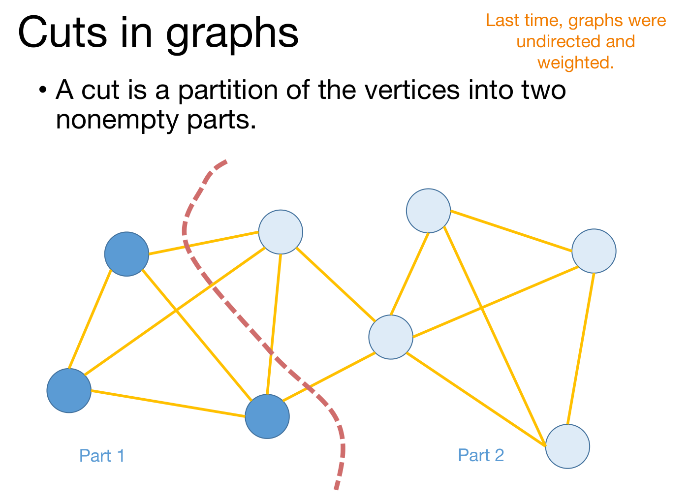
컷은 그래프를 “어디서 끊을 것인가”를 나타내는 대상입니다. 이번 강의에서는 이 개념에 방향을 입혀, 특정한 두 정점 사이의 연결을 끊는 데 드는 비용을 재게 됩니다.
2.2 오늘의 그래프 (Today)
이번 강의의 그래프는 지난 시간과 두 가지가 다릅니다.
- 그래프는 유향(directed)이고, 간선마다 용량(capacity)이라는 가중치가 있습니다.
- 특별한 정점이 두 개 있습니다. 소스(source) \(s\)와 싱크(sink) \(t\)입니다.
- \(s\)에는 나가는 간선만 있습니다.
- \(t\)에는 들어오는 간선만 있습니다.
슬라이드는 두 번째 불릿의 두 조건에 별표를 달고, 이것이 단순화를 위한 가정일 뿐 모든 내용이 임의의 유향 그래프로 일반화된다고 덧붙입니다.
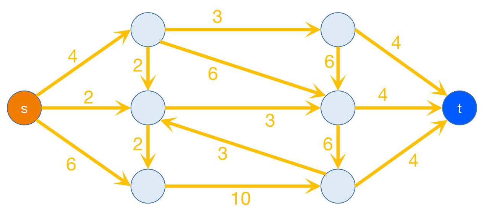
슬라이드는 정점에 이름을 붙이지 않으므로, 위 캡션의 \(u_1, \ldots, v_3\)을 써서 간선과 용량을 표로 정리하면 다음과 같습니다.
| 간선 무리 | 간선 (용량) |
|---|---|
| \(s\)에서 나가는 간선 | \(s \to u_1\) (4), \(s \to u_2\) (2), \(s \to u_3\) (6) |
| 왼쪽 열 안 | \(u_1 \to u_2\) (2), \(u_2 \to u_3\) (2) |
| 왼쪽 열 → 오른쪽 열 | \(u_1 \to v_1\) (3), \(u_1 \to v_2\) (6), \(u_2 \to v_2\) (3), \(u_3 \to v_3\) (10) |
| 오른쪽 열 → 왼쪽 열 | \(v_3 \to u_2\) (3) |
| 오른쪽 열 안 | \(v_1 \to v_2\) (6), \(v_2 \to v_3\) (6) |
| \(t\)로 들어가는 간선 | \(v_1 \to t\) (4), \(v_2 \to t\) (4), \(v_3 \to t\) (4) |
슬라이드는 정의를 말로만 적으므로, 이후 식을 쓰기 위해 다음 기호를 붙여 두겠습니다(알고리즘 교과서에서 흔히 쓰는 표기입니다). 그래프는 \(G = (V, E)\), 정점 수는 \(n = |V|\), 간선 수는 \(m = |E|\)이고, 간선 \((u, v) \in E\)의 용량을 \(c(u, v) > 0\)으로 씁니다. 4.13절의 수행 시간 \(O(nm^2)\)에 나오는 \(n\)과 \(m\)이 바로 이 두 수입니다.
2.3 s-t 컷 (An s-t Cut)
이제 컷에 방향을 입힙니다.
- s-t 컷(s-t cut): \(s\)와 \(t\)를 서로 다른 부분으로 가르는 컷입니다. 이 포스트에서는 \(s\) 쪽 부분을 \(S\), \(t\) 쪽 부분을 \(T\)로 써서 컷을 \((S, T)\)로 나타냅니다. 곧 \(S \cup T = V\), \(S \cap T = \emptyset\), \(s \in S\), \(t \in T\)입니다.
- 컷을 건너는 간선: \(s\) 쪽에서 \(t\) 쪽으로 가는 간선, 곧 \(u \in S\), \(v \in T\)인 간선 \((u, v)\)입니다.
- 컷의 비용(cost)(또는 용량(capacity)): 컷을 건너는 간선들의 용량의 합입니다.
\[ \mathrm{cost}(S, T) \;=\; \sum_{\substack{(u,v) \in E \\ u \in S,\; v \in T}} c(u, v) \]
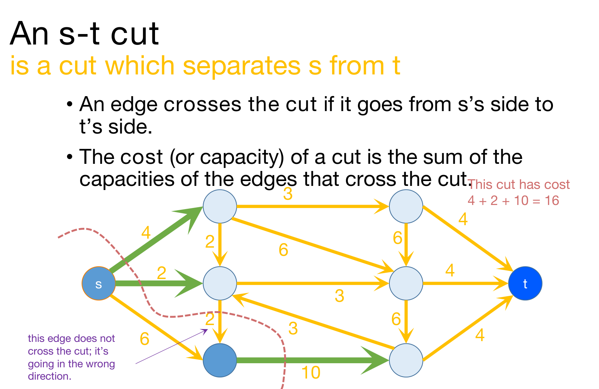
슬라이드의 예를 간선 단위로 따져 보면 정의가 분명해집니다. \(S = \{s, u_3\}\)에 닿는 간선은 다섯 개입니다.
| 간선 | 용량 | 방향 | 비용에 넣는가 |
|---|---|---|---|
| \(s \to u_1\) | 4 | \(S \to T\) | 넣습니다 |
| \(s \to u_2\) | 2 | \(S \to T\) | 넣습니다 |
| \(s \to u_3\) | 6 | \(S\) 안 | 넣지 않습니다 |
| \(u_2 \to u_3\) | 2 | \(T \to S\) (잘못된 방향) | 넣지 않습니다 |
| \(u_3 \to v_3\) | 10 | \(S \to T\) | 넣습니다 |
그래서 \(\mathrm{cost}(S, T) = 4 + 2 + 10 = 16\)입니다.
왜 한 방향만 셀까요? 컷의 비용은 “\(s\)에서 \(t\)로 가는 길을 모두 끊는 데 드는 비용”으로 읽을 수 있습니다. \(s\)에서 \(t\)로 가는 어떤 경로든 \(S\)에서 출발해 \(T\)에서 끝나므로, 도중에 \(S\)에서 \(T\)로 넘어가는 간선을 적어도 하나 지납니다. 그러니 \(S \to T\) 간선만 모두 끊으면 충분하고, \(T \to S\) 간선은 끊을 필요가 없습니다. 이 직관은 3.6절에서 보조정리 1의 증명으로 다시 나타납니다.
2.4 최소 s-t 컷 (A Minimum s-t Cut)
- 최소 s-t 컷(minimum s-t cut)은 비용이 가장 작은 s-t 컷입니다.
- 질문: 최소 s-t 컷을 어떻게 찾을까요?
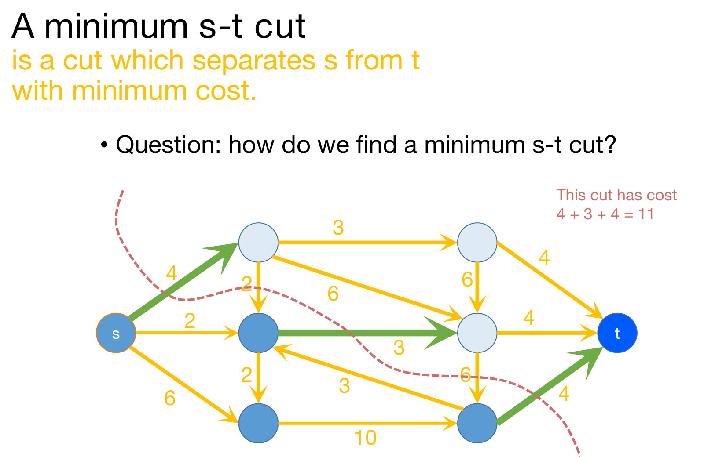
이 컷의 비용 11이 정말 최소인지는 3장의 정리가 알려 주지만, 작은 예제라 직접 확인할 수도 있습니다.
- \(s\)와 \(t\)의 자리는 정해져 있으므로, 가운데 정점 6개를 각각 \(S\)와 \(T\) 가운데 어디에 둘지 고르면 s-t 컷이 하나 정해집니다. 모두 \(2^6 = 64\)가지입니다.
- 64가지의 비용을 모두 계산하면 최솟값은 정말 11이고, 이 값을 내는 컷은 둘입니다. 하나는 슬라이드의 \(\{s, u_2, u_3, v_3\}\)이고, 다른 하나는 \(\{s, u_1, u_2, u_3, v_2, v_3\}\)로 \(u_1 \to v_1\)(3), \(v_2 \to t\)(4), \(v_3 \to t\)(4)가 건너 역시 11입니다. 최소 컷은 하나뿐일 필요가 없습니다.
- 일반적으로 정점이 \(n\)개면 s-t 컷은 \(2^{n-2}\)가지라 이렇게 다 뒤지는 방법은 금세 불가능해집니다. 슬라이드의 질문이 진지한 질문인 이유입니다.
2.5 이 문제가 등장하는 곳 (Example Where This Comes Up)
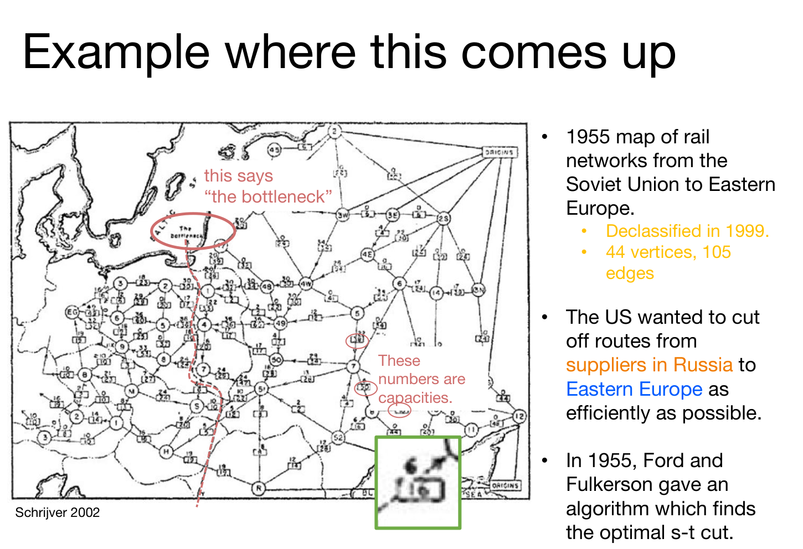
슬라이드의 설명을 정리하면 다음과 같습니다.
- 1955년의 소련에서 동유럽으로 가는 철도망 지도입니다.
- 1999년에 기밀이 해제되었습니다.
- 정점 44개, 간선 105개입니다.
- 미국은 러시아의 보급지에서 동유럽으로 가는 경로를 가능한 한 효율적으로 끊고 싶어 했습니다.
- 1955년 Ford와 Fulkerson이 최적의 s-t 컷을 찾는 알고리즘을 내놓았습니다.
지도를 그래프로 읽으면 소스는 러시아의 보급지, 싱크는 동유럽, 간선의 용량은 철도 구간이 감당할 수 있는 수송량입니다. 철도 구간을 끊는 데 그 수송량만큼의 비용이 든다고 보면, 보급로를 가장 적은 비용으로 완전히 끊는 문제가 곧 최소 s-t 컷입니다. 지도 위의 점선과 ’병목’이라는 글씨가 그 답의 모양을 보여 줍니다.
3. 최대 s-t 흐름 (Maximum s-t Flows)
3.1 흐름 (Flows)
이번에는 같은 그래프에서 반대 방향의 질문을 던집니다. 컷이 “얼마나 싸게 끊을 수 있나”였다면, 흐름은 “얼마나 많이 보낼 수 있나”입니다. 흐름(flow)은 국내 교재에서 유량이라고도 부릅니다. 슬라이드는 흐름을 세 줄로 정의합니다.
- 간선마다 용량에 더해 흐름이 있습니다. 그림에서 흐름이 표시되지 않은 간선은 흐름이 0입니다.
- 간선의 흐름은 그 간선의 용량보다 작아야 합니다.
- \(s\), \(t\)를 뺀 모든 정점에서 들어오는 흐름과 나가는 흐름이 같아야 합니다.
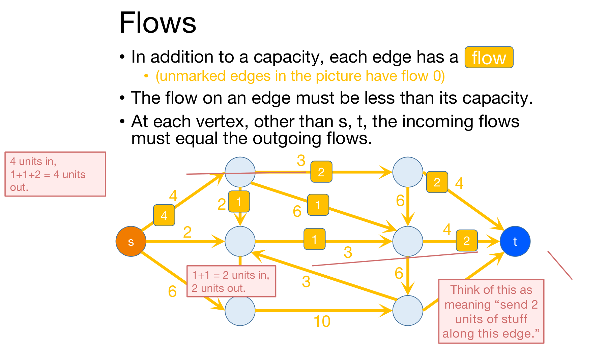
이를 앞에서 붙인 기호로 옮기면 다음과 같습니다.
간선마다 실수 \(f(u, v)\)를 붙인 것이 다음 두 조건을 만족하면 흐름(flow)이라 합니다.
- 용량 제약(capacity constraint): 모든 간선 \((u, v) \in E\)에서 \(0 \le f(u, v) \le c(u, v)\)입니다.
- 흐름 보존(flow conservation): \(s\)도 \(t\)도 아닌 모든 정점 \(v\)에서 들어오는 흐름의 합과 나가는 흐름의 합이 같습니다.
\[ \sum_{(u,v) \in E} f(u, v) \;=\; \sum_{(v,w) \in E} f(v, w) \qquad (v \ne s,\, t) \]
흐름의 값(value)은 \(s\)에서 나오는 흐름의 합이며, 이 포스트에서는 \(|f|\)로 씁니다.
\[ |f| \;=\; \sum_{(s,v) \in E} f(s, v) \]
- 슬라이드는 흐름이 용량보다 “작아야(less than)” 한다고 적었지만, 뜻은 용량을 넘지 않아야(이하) 한다는 것입니다. 3.2절의 최대 흐름에는 \(s \to u_1\)처럼 흐름이 용량과 꼭 같은 간선이 여럿 나오기 때문입니다.
- 흐름 보존은 “중간 정점은 물건을 쌓아 두지도, 새로 만들어 내지도 않는다”는 뜻입니다. 슬라이드의 예에서 \(u_1\)은 4를 받아 \(1 + 1 + 2 = 4\)를 내보내고, \(v_2\)는 \(1 + 1 = 2\)를 받아 2를 내보냅니다. 남은 두 중간 정점 \(u_2\)와 \(v_1\)도 각각 1을 받아 1을, 2를 받아 2를 내보냅니다.
다음 슬라이드는 흐름의 값을 정의합니다.
- 흐름의 값은 \(s\)에서 나오는 물건의 양이고,
- 또한 \(t\)로 흘러드는 물건의 양이기도 합니다.
- 이 둘은 같습니다! 정점마다 흐름이 보존되므로, 넣은 만큼 나오기 때문입니다.
예제 흐름의 값은 \(s\)에서 나오는 4이고, \(t\)로 들어가는 양도 \(v_1 \to t\)와 \(v_2 \to t\)의 \(2 + 2 = 4\)로 같습니다. 슬라이드가 말로 넘어간 “이 둘은 같다”를 식으로 확인해 보겠습니다. 정점 \(v\)에서 나가는 흐름의 합을 \(\mathrm{out}(v)\), 들어오는 흐름의 합을 \(\mathrm{in}(v)\)라 합시다.
1단계 (간선마다 한 번 더하고 한 번 뺍니다). 모든 정점에 대해 \(\mathrm{out}(v) - \mathrm{in}(v)\)를 더하면, 간선 \((u, v)\)의 흐름은 \(\mathrm{out}(u)\)에서 한 번 더해지고 \(\mathrm{in}(v)\)에서 한 번 빠지므로 전체 합은 0입니다.
\[ \sum_{v \in V} \bigl( \mathrm{out}(v) - \mathrm{in}(v) \bigr) \;=\; 0 \]
2단계 (보존 조건으로 중간 정점을 지웁니다). \(s\), \(t\)가 아닌 정점에서는 \(\mathrm{out}(v) - \mathrm{in}(v) = 0\)입니다. \(s\)로 들어오는 간선이 없으므로 \(\mathrm{in}(s) = 0\)이고, \(t\)에서 나가는 간선이 없으므로 \(\mathrm{out}(t) = 0\)입니다. 남는 항은 둘뿐입니다.
\[ \mathrm{out}(s) - \mathrm{in}(t) \;=\; 0 \qquad\Longrightarrow\qquad |f| \;=\; \mathrm{out}(s) \;=\; \mathrm{in}(t) \]
3.2 최대 흐름 (A Maximum Flow)
- 최대 흐름(maximum flow)은 값이 가장 큰 흐름입니다.
- 앞의 예제 흐름(값 4)은 꽤 낭비가 심합니다. 슬라이드의 말대로 용량을 잘 활용하지 못하고 있습니다.
- 다음 흐름이 최대이고, 값은 11입니다.
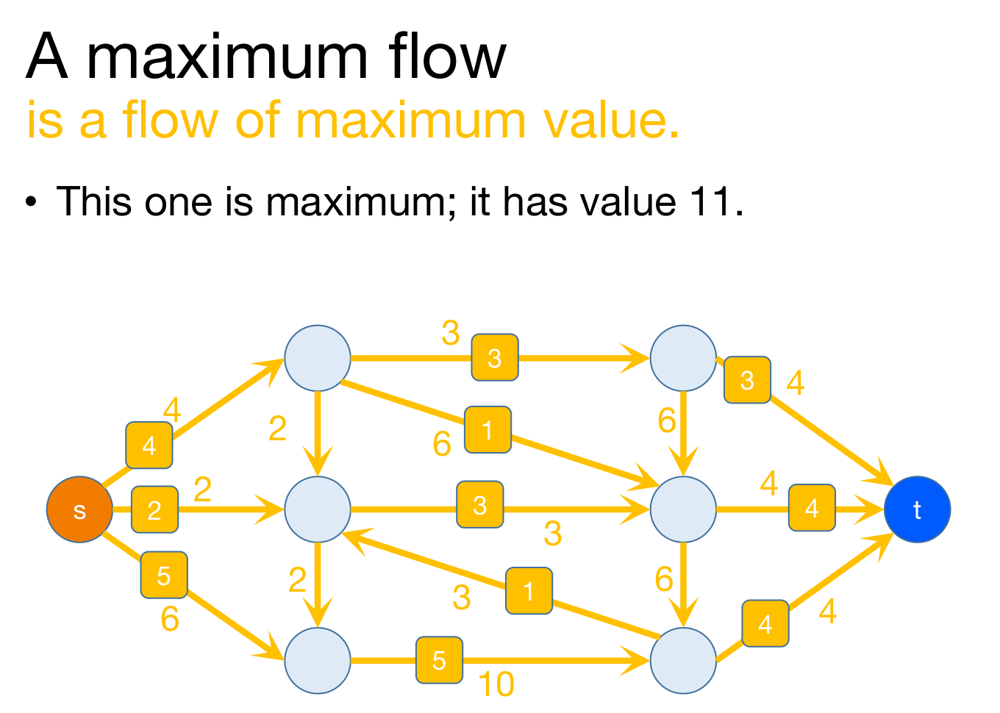
두 흐름을 간선별로 나란히 놓으면 차이가 잘 보입니다.
| 간선 | 용량 | 슬라이드 11의 흐름 | 최대 흐름 (슬라이드 14) |
|---|---|---|---|
| \(s \to u_1\) | 4 | 4 | 4 |
| \(s \to u_2\) | 2 | 0 | 2 |
| \(s \to u_3\) | 6 | 0 | 5 |
| \(u_1 \to u_2\) | 2 | 1 | 0 |
| \(u_2 \to u_3\) | 2 | 0 | 0 |
| \(u_1 \to v_1\) | 3 | 2 | 3 |
| \(u_1 \to v_2\) | 6 | 1 | 1 |
| \(u_2 \to v_2\) | 3 | 1 | 3 |
| \(u_3 \to v_3\) | 10 | 0 | 5 |
| \(v_3 \to u_2\) | 3 | 0 | 1 |
| \(v_1 \to v_2\) | 6 | 0 | 0 |
| \(v_2 \to v_3\) | 6 | 0 | 0 |
| \(v_1 \to t\) | 4 | 2 | 3 |
| \(v_2 \to t\) | 4 | 2 | 4 |
| \(v_3 \to t\) | 4 | 0 | 4 |
| 흐름의 값 | 4 | 11 |
최대 흐름이 정말 흐름인지, 중간 정점 여섯 곳의 보존을 확인해 보겠습니다.
- \(u_1\): \(s\)에서 4가 들어와 \(v_1\)로 3, \(v_2\)로 1이 나갑니다.
- \(u_2\): \(s\)에서 2, \(v_3\)에서 1이 들어와 \(v_2\)로 3이 나갑니다.
- \(u_3\): \(s\)에서 5가 들어와 \(v_3\)으로 5가 나갑니다.
- \(v_1\): \(u_1\)에서 3이 들어와 \(t\)로 3이 나갑니다.
- \(v_2\): \(u_1\)에서 1, \(u_2\)에서 3이 들어와 \(t\)로 4가 나갑니다.
- \(v_3\): \(u_3\)에서 5가 들어와 \(u_2\)로 1, \(t\)로 4가 나갑니다.
흥미로운 것은 \(v_3 \to u_2\)의 흐름 1입니다. \(u_3\) 쪽으로 들어온 물건 일부가 오른쪽 열까지 갔다가 왼쪽 열로 되돌아와 \(u_2 \to v_2\)를 타고 다시 건너갑니다. 이렇게 돌아가는 길까지 써야 11에 이른다는 점이 4장의 알고리즘에서 중요해집니다.
3.3 이 문제가 등장하는 곳 (Example Where This Comes Up)
같은 철도망 지도가 이번에는 흐름의 관점에서 다시 등장합니다.
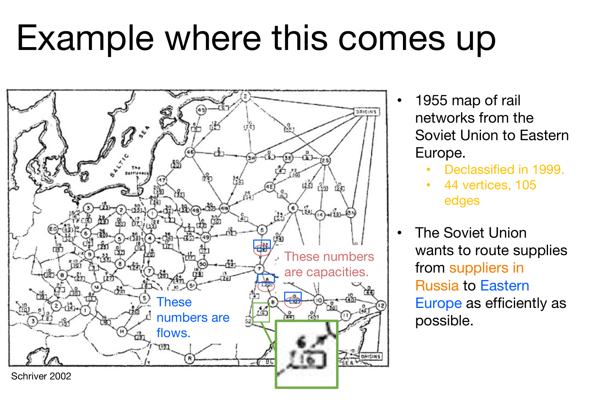
- 소련은 러시아의 보급지에서 동유럽으로 물자를 가능한 한 효율적으로 보내고 싶어 했습니다. 지도에서 상자 안 숫자는 용량, 상자 위 숫자는 흐름입니다.
이어지는 세 장은 이 문제의 역사를 원문 자료로 보여 줍니다. 슬라이드 16은 이 역사를 다룬 글의 2. Max-Flow Min-Cut 절을 발췌한 것입니다. 슬라이드에 출처 표기는 없지만, 앞의 지도와 같은 Schrijver의 2002년 글로 보입니다. 그 내용은 다음과 같습니다.
- 소련 철도망은 미국의 관심도 끌었고, 이번에도 최적화의 기초 연구로 이어졌습니다.
- Ford와 Fulkerson의 기초 논문 Maximal Flow through a Network(1954년 11월 19일 RAND 보고서로 처음 발표)는 최대 흐름 문제를 T. E. Harris가 정식화했다고 밝힙니다. 그 정식화는 대략 이렇습니다. 두 도시를 여러 중간 도시를 거쳐 잇는 철도망이 있고 구간마다 용량을 나타내는 수가 붙어 있을 때, 정상 상태를 가정하고 한 도시에서 다른 도시로 가는 최대 흐름을 찾으라는 것입니다.
- 두 사람은 1962년 책 Flows in Networks에서 출처를 더 정확히 밝힙니다. 이 문제는 1955년 봄 Harris가 제기했는데, Harris는 퇴역 장군 F. S. Ross와 함께 철도 교통 흐름의 단순화된 모형을 세우고 이 문제를 그 모형이 던지는 핵심 문제로 짚었다는 것입니다.
- 그 책의 참고문헌 11번이 Harris와 Ross가 미 공군을 위해 쓴 1955년 10월 24일자 비밀 보고서 Fundamentals of a Method for Evaluating Rail Net Capacities이고, 발췌문의 저자가 요청해 펜타곤이 1999년 5월 21일 이 보고서를 ’기밀 아님(unclassified)’으로 낮췄습니다.
슬라이드 17은 그 보고서(RAND 연구 메모 RM-1573)의 표지입니다. 맨 위에 SECRET이 찍혀 있고, 미 공군 Project RAND, 보고서 제목, 두 저자의 이름, 1955년 10월 24일이라는 날짜와 사본 번호 37이 적혀 있습니다. 슬라이드 18은 보고서의 요약 쪽으로, 공군력은 적의 철도망을 차단하는 효과적인 수단이지만 차단의 성패는 그것이 적의 병력과 물자 수송 능력에 미치는 효과를 지휘관이 얼마나 정확하고 시의적절하게 아느냐에 달려 있으며, 이 보고서는 철도 수송 능력을 추정하는 전문가를 돕는 방법의 기초를 제시한다는 내용입니다.
3.4 최대 흐름-최소 컷 정리 (Theorem: Max-Flow Min-Cut Theorem)
3.2절의 최대 흐름을 다시 띄운 슬라이드는 한 줄을 덧붙입니다. 값 11은 이 그래프의 최소 컷과 같습니다! 2.4절의 최소 컷 비용도 11이었습니다. 이것은 우연이 아니라 다음 정리의 한 예입니다. 슬라이드는 이 정리를 Max-flow min-cut theorem과 Min-Cut Max-Flow Thm 두 이름으로 번갈아 부릅니다.
\(s\)에서 \(t\)로 가는 최대 흐름의 값은 최소 s-t 컷의 비용과 같습니다.
\[ \max_{f} \, |f| \;=\; \min_{(S,T)} \, \mathrm{cost}(S, T) \]
왼쪽의 최댓값은 모든 흐름에 대해, 오른쪽의 최솟값은 모든 s-t 컷에 대해 취합니다.
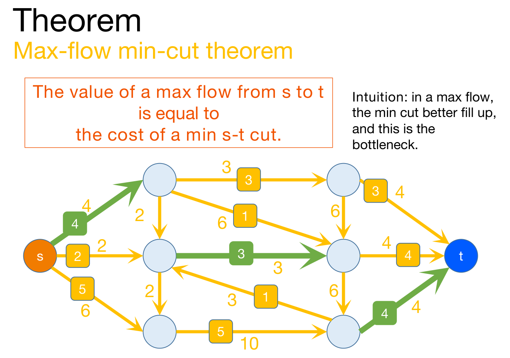
슬라이드의 직관은 “최대 흐름에서는 최소 컷이 꽉 차야 하고, 그것이 병목이다”입니다. 그림에서 확인할 수 있는 사실이 하나 더 있습니다. 이 컷을 \(t\) 쪽에서 \(s\) 쪽으로 거꾸로 지나는 간선 \(u_1 \to u_2\)와 \(v_2 \to v_3\)의 흐름은 모두 0입니다. 앞으로 갈 길만 꽉 차 있고 되돌아오는 물건은 없다는 것, 이 두 사실이 3.6절과 4.8절의 증명에서 정확히 쓰입니다.
3.5 증명 개요 (Proof Outline)
정리의 증명은 두 단계로 나뉩니다.
- 보조정리 1: 최대 흐름 ≤ 최소 컷. — 그림으로 증명합니다(proof-by-picture).
- 실제로 원하는 것: 최대 흐름 = 최소 컷. — 알고리즘으로 증명합니다(proof-by-algorithm). 그 알고리즘이 바로 Ford-Fulkerson 알고리즘입니다! 이 단계에도 보조정리 1이 쓰입니다.
알고리즘이 증명이 되는 이유는 다음과 같습니다. 보조정리 1이 “모든 흐름의 값 ≤ 모든 컷의 비용”을 보장하므로, 값이 같은 흐름 \(f\)와 컷 \((S, T)\)를 하나라도 찾으면 \(f\)는 더 키울 수 없고 \((S, T)\)는 더 줄일 수 없습니다. 둘이 서로가 최적이라는 증거가 되는 셈입니다. Ford-Fulkerson 알고리즘은 바로 그런 흐름과 컷의 짝을 만들어 냅니다.
3.6 정리의 절반: 보조정리 1 (One Half of Min-Cut Max-Flow Thm)
임의의 s-t 흐름 \(f\)와 임의의 s-t 컷 \((S, T)\)에 대해, 흐름의 값은 컷의 비용을 넘지 않습니다.
\[ |f| \;\le\; \mathrm{cost}(S, T) \]
따라서 최대 흐름 ≤ 최소 컷입니다.
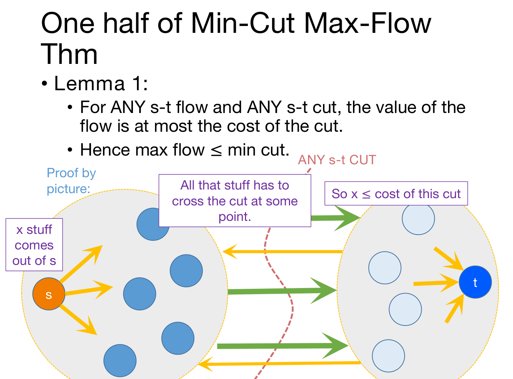
그림 증명의 논리는 세 문장입니다.
- \(s\)에서 물건 \(x\)가 나옵니다. 곧 \(|f| = x\)입니다.
- 그 물건은 모두 언젠가 컷을 건너야 합니다. \(t\)에 도착하려면 \(T\)로 넘어가야 하기 때문입니다.
- 그러니 \(x\)는 이 컷의 비용 이하입니다. 건너는 간선마다 용량만큼만 실을 수 있기 때문입니다.
그림 증명을 식으로 옮기기
다음 슬라이드는 이것이 그림 증명이었다고 짚고, “그림 증명을 진짜 증명으로 바꿔 보는 것은 좋은 연습”이라고 권합니다. 그 연습을 해 보겠습니다. 3.1절의 \(\mathrm{out}(v)\), \(\mathrm{in}(v)\)를 그대로 씁니다.
1단계 (\(S\) 쪽 정점들의 순유출을 더합니다). \(S\)의 정점마다 \(\mathrm{out}(u) - \mathrm{in}(u)\)를 생각합니다. \(u = s\)이면 들어오는 간선이 없으므로 이 값은 \(|f|\)이고, \(s\)가 아닌 \(u \in S\)는 \(t\)도 아니므로(\(t \in T\)) 흐름 보존에 따라 0입니다.
\[ \sum_{u \in S} \bigl( \mathrm{out}(u) - \mathrm{in}(u) \bigr) \;=\; |f| \]
2단계 (\(S\) 안의 간선은 상쇄됩니다). 왼쪽 합에 나타나는 간선을 양 끝의 위치로 나눠 봅니다.
- 양 끝이 모두 \(S\)에 있는 간선 \((u, v)\)는 \(\mathrm{out}(u)\)에서 \(+f(u,v)\), \(\mathrm{in}(v)\)에서 \(-f(u,v)\)로 두 번 나타나 지워집니다.
- \(S\)에서 \(T\)로 가는 간선은 꼬리 쪽 \(\mathrm{out}\)에서 한 번만 더해집니다.
- \(T\)에서 \(S\)로 오는 간선은 머리 쪽 \(\mathrm{in}\)에서 한 번만 빠집니다.
따라서 흐름의 값은 컷을 가로지르는 순흐름과 같습니다. “물건은 모두 컷을 건너야 한다”는 문장을 식으로 쓴 것입니다.
\[ |f| \;=\; \sum_{\substack{(u,v) \in E \\ u \in S,\; v \in T}} f(u, v) \;-\; \sum_{\substack{(v,u) \in E \\ v \in T,\; u \in S}} f(v, u) \]
3단계 (두 부등식). 흐름은 음이 아니므로 둘째 합을 버리면 커지거나 같고, 용량 제약에 따라 각 흐름은 용량 이하입니다.
\[ |f| \;\le\; \sum_{\substack{(u,v) \in E \\ u \in S,\; v \in T}} f(u, v) \;\le\; \sum_{\substack{(u,v) \in E \\ u \in S,\; v \in T}} c(u, v) \;=\; \mathrm{cost}(S, T) \]
4단계 (모든 짝에 대해). 이 부등식은 아무 흐름과 아무 컷에 대해 성립하므로, 왼쪽을 최대로, 오른쪽을 최소로 골라도 성립합니다. 곧 최대 흐름 ≤ 최소 컷입니다. \(\blacksquare\)
증명을 거꾸로 읽으면 등호가 언제 성립하는지도 보입니다. 3단계의 두 부등식이 모두 등호이려면 다음 두 가지가 필요합니다.
- \(S\)에서 \(T\)로 가는 간선이 모두 꽉 차 있어야 합니다(\(f = c\)).
- \(T\)에서 \(S\)로 오는 간선의 흐름이 모두 0이어야 합니다.
3.4절의 그림이 바로 이 상태였습니다. 슬라이드 14의 최대 흐름과 슬라이드 9의 최소 컷에서 \(S \to T\) 간선의 흐름은 \(4 + 3 + 4 = 11\)로 모두 꽉 차 있고, \(T \to S\) 간선 \(u_1 \to u_2\)와 \(v_2 \to v_3\)의 흐름은 0이라 \(|f| = 11 - 0 = 11 = \mathrm{cost}(S, T)\)입니다. 반면 같은 흐름을 비용 16인 컷 \(\{s, u_3\}\)에 대 보면 \(S \to T\) 간선의 흐름은 \(4 + 2 + 5 = 11\)로 용량 합 16에 못 미칩니다. 순흐름은 어느 컷에서 재든 11이지만, 비용과 같아지는 것은 꽉 찬 컷에서뿐입니다.
3.7 정리는 더 강합니다 (Min-Cut Max-Flow Thm)
보조정리 1은 정리의 절반, 곧 최대 흐름 ≤ 최소 컷만 줍니다. 정리는 그보다 강해서 최대 흐름 = 최소 컷을 말합니다. 3.5절의 계획대로 이 나머지 절반은 알고리즘으로 증명합니다. 위에서 본 등호 조건을 만족하는 흐름과 컷을 실제로 만들어 내는 알고리즘을 찾으면 됩니다.
4. 포드-풀커슨 알고리즘 (The Ford-Fulkerson Algorithm)
4.1 최대 흐름 알고리즘 떠올려 보기 (Maximum Flow: Let’s Brainstorm)
슬라이드는 예제 네트워크를 다시 띄우고 “최대 흐름을 구하는 알고리즘을 몇 가지 떠올려 봅시다”라고 청합니다. 답은 슬라이드에 없지만, 가장 먼저 떠오르는 방법이 왜 모자란지 보면 다음 절들의 동기가 분명해집니다.
- 첫 시도: 아직 용량이 남은 \(s \to t\) 경로를 찾아, 그 경로로 보낼 수 있는 만큼 보내기를 되풀이합니다.
- 예제에서 \(s \to u_1 \to v_2 \to t\)로 4를 보내고 \(s \to u_3 \to v_3 \to t\)로 4를 보내면 값은 8입니다.
- 그러면 \(s \to u_1\), \(v_2 \to t\), \(v_3 \to t\)가 꽉 차서 \(s\)에서 남은 용량으로 갈 수 있는 정점은 \(u_2\), \(u_3\), \(v_2\), \(v_3\)뿐이고, 이 정점들에서 \(t\)로 가는 간선은 모두 꽉 찼습니다. 8에서 막힙니다. 최대 흐름은 11인데도요.
막힌 이유는 첫 결정을 되돌릴 수 없기 때문입니다. 3.2절의 최대 흐름에서 \(u_1 \to v_2\)는 1만 쓰는데, 첫 시도는 여기에 4를 실어 버렸습니다. 이미 보낸 흐름을 취소하고 다른 길로 돌릴 방법이 필요하고, 그것이 다음 절의 잔여 그래프가 하는 일입니다. 4.7절의 예제는 바로 이 두 경로로 시작해, 되돌리기로 나머지 3을 찾습니다.
4.2 알고리즘의 윤곽 (Ford-Fulkerson Algorithm: Outline)
Ford-Fulkerson 알고리즘(포드-풀커슨 알고리즘)의 윤곽은 네 줄입니다.
- 흐름 0에서 시작합니다.
- 잔여 그래프(residual graph) \(G_f\)를 유지합니다.
- \(G_f\)에서 \(s\)에서 \(t\)로 가는 경로가 흐름을 개선할 방법을 알려 줍니다.
- \(s\)-\(t\) 경로가 하나도 남지 않을 때까지 계속합니다.
슬라이드 구석에는 두 정점 사이에 서로 반대 방향인 간선 한 쌍을 그려 두고, 오늘은 이런 간선이 없다고 가정하지만 꼭 필요한 가정은 아니라고 적어 둡니다.
- 이 가정이 편한 이유는 다음 절에서 드러납니다. 간선 \((u, v)\)의 흐름을 되돌리는 역방향 간선은 \(v \to u\) 방향인데, 원래 그래프에 \((v, u)\)도 있으면 잔여 그래프에 같은 방향의 간선이 두 개 생겨 어느 원래 간선을 고쳐야 하는지 헷갈리게 됩니다.
- 가정이 필요 없는 이유는, 그런 쌍이 있으면 한쪽 간선 가운데에 새 정점을 하나 끼워 두 간선으로 쪼개면 되기 때문입니다. 쪼갠 두 간선에 원래 용량을 그대로 주면 최대 흐름은 변하지 않습니다. 예제 네트워크에는 이런 쌍이 없습니다.
4.3 도구: 잔여 네트워크 (Tool: Residual Networks)
흐름 \(f\)가 있는 그래프 \(G\)에서 새 그래프를 만듭니다. 슬라이드는 이것을 잔여 네트워크(residual network)라고도, 잔여 그래프(residual graph)라고도 부르며 \(G_f\)로 씁니다.
원래 그래프의 간선 \((u, v) \in E\)마다 \(G_f\)에 다음 두 간선을 둡니다. 가중치가 0인 간선은 두지 않습니다.
- 정방향 간선(forward edge) \(u \to v\), 가중치 \(c(u, v) - f(u, v)\) — 아직 남은 양, 곧 더 보낼 수 있는 양입니다.
- 역방향 간선(backward edge) \(v \to u\), 가중치 \(f(u, v)\) — 이미 쓴 양, 곧 되돌릴 수 있는 양입니다.
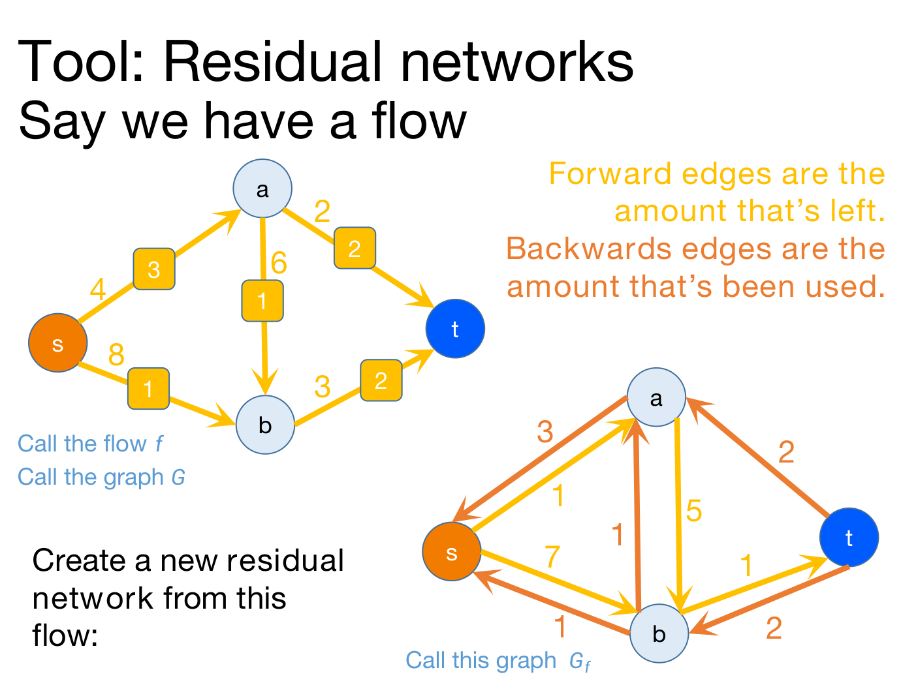
바로 앞 슬라이드는 같은 그림에 두 설명을 달아 둡니다. 정방향 간선의 가중치는 ‘용량 − 흐름’이고, 역방향 간선의 가중치는 ‘흐름’입니다. 그 슬라이드에는 꽉 찬 \(a \to t\)의 정방향 간선이 가중치 0으로 그려져 있다가, 이 슬라이드에서 빠집니다. 원래 간선 다섯 개가 만드는 잔여 간선을 표로 정리하면 다음과 같습니다.
| \(G\)의 간선 | 용량 \(c\) | 흐름 \(f\) | 정방향 간선 (\(c - f\)) | 역방향 간선 (\(f\)) |
|---|---|---|---|---|
| \(s \to a\) | 4 | 3 | \(s \to a\): 1 | \(a \to s\): 3 |
| \(s \to b\) | 8 | 1 | \(s \to b\): 7 | \(b \to s\): 1 |
| \(a \to b\) | 6 | 1 | \(a \to b\): 5 | \(b \to a\): 1 |
| \(a \to t\) | 2 | 2 | 없음 (0) | \(t \to a\): 2 |
| \(b \to t\) | 3 | 2 | \(b \to t\): 1 | \(t \to b\): 2 |
역방향 간선을 따라간다는 것은 실제로 물건을 거꾸로 보낸다는 뜻이 아니라, 이미 보낸 흐름을 취소한다는 뜻입니다. \(a \to b\)로 1을 보냈다면, 그 1을 취소해 \(a\)에서 다른 곳으로 보낼 수 있다는 선택지를 역방향 간선 \(b \to a\)가 나타냅니다. 4.1절의 첫 시도에 없던 것이 바로 이 선택지입니다.
4.4 잔여 네트워크는 흐름을 키우는 법을 알려 줍니다 (Residual Networks Tell Us How to Improve the Flow)
- 정의: 잔여 네트워크에서 \(s\)에서 \(t\)로 가는 경로를 증가 경로(augmenting path)라 합니다.
- 주장(claim): 증가 경로가 있으면, 그 경로를 따라 흐름을 늘릴 수 있습니다.
슬라이드는 이 주장을 두 경우로 나눠 보입니다. 슬라이드 29부터는 정점 이름 \(a\), \(b\)가 그림에서 빠지는데, 이 포스트에서는 계속 위 정점을 \(a\), 아래 정점을 \(b\)로 부르겠습니다.
쉬운 경우: 정방향 간선만 있을 때 (Easy Case)
증가 경로의 간선이 모두 정방향 간선이면 간단합니다.
- 정방향 간선의 가중치는 그 간선으로 아직 더 보낼 수 있는 양입니다.
- 그러니 경로 위 모든 간선의 흐름을 그냥 늘리면 됩니다! 얼마나 늘릴지는 경로 위 가장 작은 가중치가 정합니다.
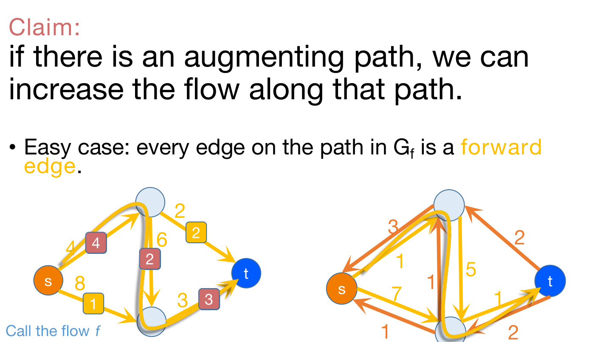
경로 \(s \to a \to b \to t\)의 가중치는 1, 5, 1이므로 1만큼 늘릴 수 있고, 흐름의 값은 \(3 + 1 = 4\)에서 \(4 + 1 = 5\)로 커집니다. 용량을 넘는 간선은 없습니다. 늘린 양 1이 세 간선 모두에서 남은 양 이하이기 때문입니다.
어려운 경우: 역방향 간선이 섞여 있을 때 (Harder Case)
경로에 역방향 간선이 섞여 있으면 이야기가 달라집니다. 슬라이드는 이를 보이려고 조금 다른 흐름을 가져옵니다. 일부 용량과 간선 방향을 바꾸었다고 밝혀 두는데, 원래 그래프는 다음과 같습니다.
| 간선 | 용량 | 흐름 | 정방향 잔여 | 역방향 잔여 |
|---|---|---|---|---|
| \(s \to a\) | 4 | 1 | \(s \to a\): 3 | \(a \to s\): 1 |
| \(s \to b\) | 3 | 1 | \(s \to b\): 2 | \(b \to s\): 1 |
| \(b \to a\) | 6 | 1 | \(b \to a\): 5 | \(a \to b\): 1 |
| \(a \to t\) | 2 | 2 | 없음 (0) | \(t \to a\): 2 |
| \(b \to t\) | 3 | 0 | \(b \to t\): 3 | 없음 (0) |
흐름의 값은 2이고, 이 흐름은 물건 1을 \(s \to a \to t\)로, 또 1을 \(s \to b \to a \to t\)로 보내고 있습니다. 증가 경로 \(s \to a \to b \to t\)를 잡으면 가운데 \(a \to b\)는 원래 간선 \(b \to a\)에서 생긴 역방향 간선입니다.
- 이번에는 경로 위 모든 간선의 흐름을 늘리면 안 됩니다! 슬라이드는 그렇게 하면 \(b\)에서 물건의 보존이 깨진다고 경고합니다. 실제로 \(s \to a\), \(b \to a\), \(b \to t\)를 모두 1씩 늘리면 \(b\)에는 1이 들어오는데 \(b \to a\)로 2, \(b \to t\)로 1, 모두 3이 나가야 합니다.
- 대신 조금 다르게 합니다. 정방향으로 지나간 \(s \to a\)와 \(b \to t\)에는 흐름을 더하고, 경로가 거꾸로 지나간 원래 간선 \(b \to a\)에서는 흐름을 뺍니다.
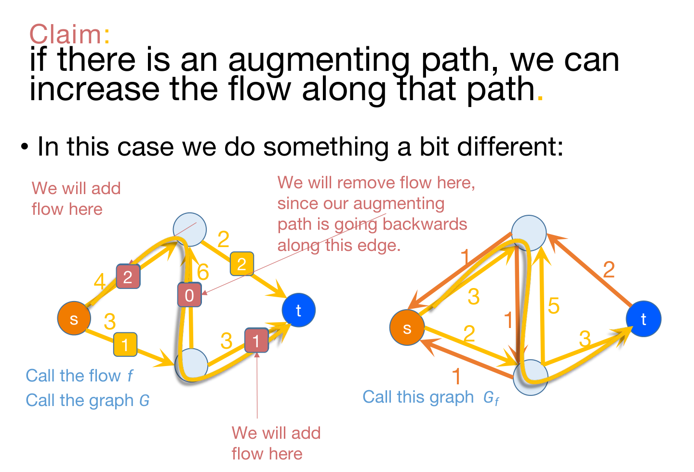
그다음 잔여 그래프도 새 흐름에 맞게 고칩니다. 고치기 전후를 나란히 놓은 것이 다음 슬라이드입니다.
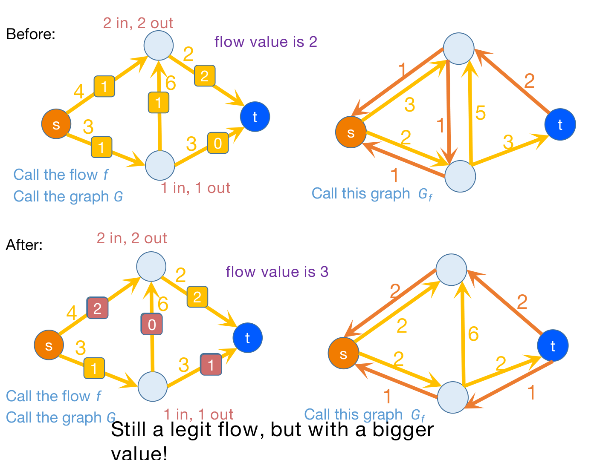
무슨 일이 일어났는지 물건의 경로로 읽어 보면 역방향 간선의 뜻이 선명해집니다.
- 증가 전: 물건 1이 \(s \to a \to t\)로, 다른 1이 \(s \to b \to a \to t\)로 갑니다. \(a \to t\)는 2로 꽉 찼습니다.
- 증가 후: \(s \to b\)로 들어간 물건은 \(a\)를 거치지 않고 \(b \to t\)로 곧장 갑니다. 그 덕에 비게 된 \(a \to t\)의 자리 1을 \(s \to a\)로 새로 들어온 물건이 씁니다.
- 결국 \(b \to a\)로 보내던 1을 취소하고 그 물건을 다른 길로 돌린 것이며, 그 결과 \(s\)에서 1을 더 보낼 수 있게 되었습니다.
4.5 흐름을 늘리는 절차: increaseFlow
두 경우를 하나로 묶은 절차가 슬라이드의 increaseFlow입니다. 주석은 이 포스트에서 붙였습니다.
increaseFlow(path P in G_f, flow f):
x = min weight on any edge in P // 병목: P 위 잔여 가중치의 최솟값
for (u,v) in P:
if (u,v) in E, f'(u,v) ← f(u,v) + x // 정방향 간선: 원래 간선의 흐름에 x를 더함
if (v,u) in E, f'(v,u) ← f(v,u) − x // 역방향 간선: 원래 간선 (v,u)의 흐름에서 x를 뺌
return f' // P와 상관없는 간선은 f' = f- 원래 그래프에 반대 방향 간선 쌍이 없다는 4.2절의 가정 덕분에, \(P\)의 각 간선에 대해 두
if가운데 정확히 하나만 참입니다. - 증가 경로는 정점을 되풀이하지 않는 경로이므로, 원래 간선 하나가 두 번 고쳐지는 일도 없습니다.
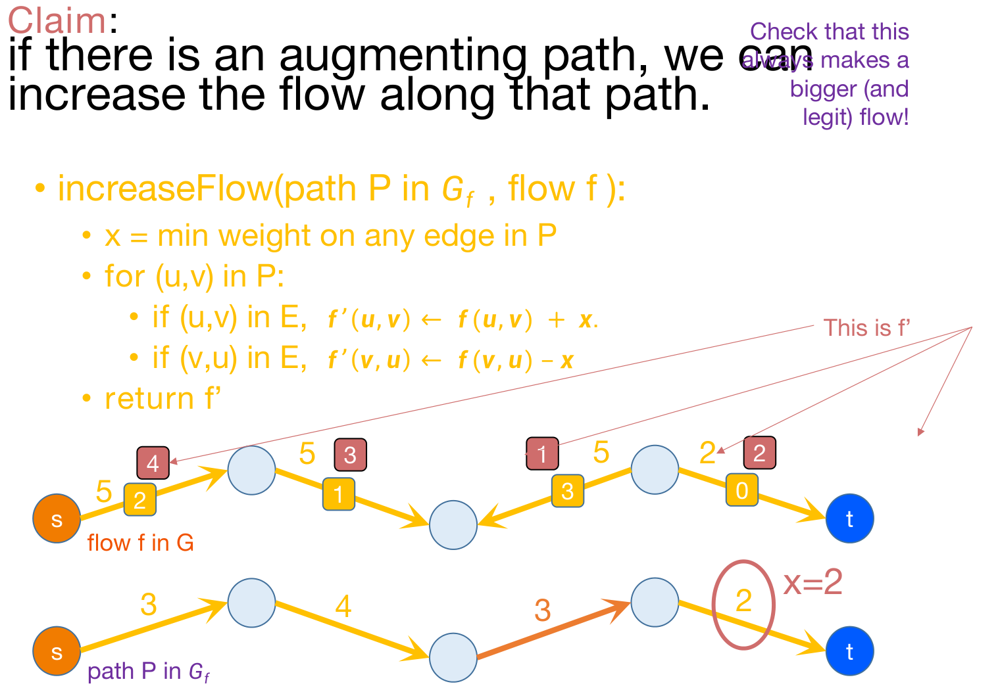
슬라이드의 예제 경로를 표로 풀면 다음과 같습니다. 정점 이름 \(w_1, w_2, w_3\)은 이 포스트에서 붙인 것입니다.
| 원래 간선 | 용량, 흐름 | \(P\) 위 잔여 간선 | 잔여 가중치 | 종류 | 새 흐름 |
|---|---|---|---|---|---|
| \(s \to w_1\) | 5, 2 | \(s \to w_1\) | \(5 - 2 = 3\) | 정방향 | \(2 + 2 = 4\) |
| \(w_1 \to w_2\) | 5, 1 | \(w_1 \to w_2\) | \(5 - 1 = 4\) | 정방향 | \(1 + 2 = 3\) |
| \(w_3 \to w_2\) | 5, 3 | \(w_2 \to w_3\) | \(3\) | 역방향 | \(3 - 2 = 1\) |
| \(w_3 \to t\) | 2, 0 | \(w_3 \to t\) | \(2 - 0 = 2\) | 정방향 | \(0 + 2 = 2\) |
병목은 \(x = \min\{3, 4, 3, 2\} = 2\)입니다. \(w_2\)로 들어오는 흐름은 \(1 + 3 = 4\)에서 \(3 + 1 = 4\)로, \(w_3\)에서 나가는 흐름은 \(3 + 0 = 3\)에서 \(1 + 2 = 3\)으로 변하지 않습니다.
언제나 더 크고 올바른 흐름일까요?
슬라이드가 확인해 보라고 권한 것을 세 가지로 나눠 확인합니다. \(x\)는 \(P\) 위 잔여 가중치의 최솟값이고, 잔여 간선의 가중치는 모두 양수이므로 \(x > 0\)입니다.
① 용량 제약. 정방향 간선은 가중치 \(c - f \ge x\)이므로 \(f + x \le c\)이고, 역방향 간선은 가중치 \(f \ge x\)이므로 \(f - x \ge 0\)입니다. 어느 쪽도 \(0\) 아래로 내려가거나 용량을 넘지 않습니다.
② 흐름 보존. \(P\)가 지나가는 중간 정점 \(v\)를 봅시다. \(P\)는 어떤 간선으로 \(v\)에 들어와 어떤 간선으로 나가는데, 각각 정방향일 수도 역방향일 수도 있어 경우는 넷입니다.
| \(P\)가 \(v\)로 들어오는 간선 | \(P\)가 \(v\)에서 나가는 간선 | \(\mathrm{in}(v)\)의 변화 | \(\mathrm{out}(v)\)의 변화 |
|---|---|---|---|
| 정방향 (원래 간선이 \(v\)로 들어옴, \(+x\)) | 정방향 (원래 간선이 \(v\)에서 나감, \(+x\)) | \(+x\) | \(+x\) |
| 정방향 (원래 간선이 \(v\)로 들어옴, \(+x\)) | 역방향 (원래 간선이 \(v\)로 들어옴, \(-x\)) | \(+x - x = 0\) | \(0\) |
| 역방향 (원래 간선이 \(v\)에서 나감, \(-x\)) | 정방향 (원래 간선이 \(v\)에서 나감, \(+x\)) | \(0\) | \(-x + x = 0\) |
| 역방향 (원래 간선이 \(v\)에서 나감, \(-x\)) | 역방향 (원래 간선이 \(v\)로 들어옴, \(-x\)) | \(-x\) | \(-x\) |
네 경우 모두 \(\mathrm{in}(v)\)와 \(\mathrm{out}(v)\)가 같은 양만큼 변하므로 보존이 유지됩니다. \(P\)가 지나가지 않는 정점의 흐름은 그대로입니다. 4.4절의 어려운 경우에서 \(a\)는 둘째 줄, \(b\)는 셋째 줄에 해당합니다. \(a\)로 들어오는 흐름은 \(s \to a\)에서 1 늘고 \(b \to a\)에서 1 줄어 그대로였고, \(b\)에서 나가는 흐름은 \(b \to a\)에서 1 줄고 \(b \to t\)에서 1 늘어 그대로였습니다.
③ 값의 증가. \(P\)의 첫 간선은 \(s\)에서 나갑니다. 원래 그래프에서 \(s\)로 들어오는 간선이 없으므로 \(s\)에서 나가는 역방향 간선도 없고, 따라서 첫 간선은 정방향입니다. \(s\)에서 나가는 흐름이 정확히 \(x\)만큼 늘므로 \(|f'| = |f| + x > |f|\)입니다. \(\blacksquare\)
4.6 Ford-Fulkerson 알고리즘 (Ford-Fulkerson Algorithm)
이제 알고리즘 전체를 쓸 수 있습니다. 주석은 이 포스트에서 붙였습니다.
Ford-Fulkerson(G):
f ← all zero flow. // 흐름 0에서 시작
G_f ← G // 흐름이 0이면 잔여 그래프는 G와 같음
while t is reachable from s in G_f // 증가 경로가 남아 있는 동안
Find a path P from s to t in G_f // e.g., use DFS or BFS
f ← increaseFlow(P,f) // 병목 x만큼 흐름을 늘림
update G_f // P 위 간선들의 잔여 가중치만 바뀜
return f- 흐름이 0이면 정방향 간선의 가중치는 용량 그대로이고 역방향 간선은 하나도 없으므로, 처음의 \(G_f\)는 \(G\) 자신입니다.
- 증가 경로는 DFS나 BFS로 찾습니다. 어느 탐색을 쓰느냐가 4.11–4.13절에서 수행 시간을 가르게 됩니다.
- 4.5절에서 확인했듯 반복마다 올바른 흐름이 유지되고 값이 늘어납니다. 남은 질문은 두 가지입니다. 멈췄을 때 정말 최대인가(4.8절)와 언제 멈추는가(4.11–4.13절)입니다.
4.7 Ford-Fulkerson 예제 (Example of Ford-Fulkerson)
예제 네트워크에서 알고리즘을 돌린 슬라이드 열한 장을 정리하면 증가는 모두 네 번입니다. 경로는 정점의 나열로 적었습니다.
| 단계 | 증가 경로 | 경로 위 잔여 가중치 | 역방향 간선 | 병목 \(x\) | 흐름의 값 |
|---|---|---|---|---|---|
| 1 | \(s, u_1, v_2, t\) | 4, 6, 4 | 없음 | 4 | 0 → 4 |
| 2 | \(s, u_3, v_3, t\) | 6, 10, 4 | 없음 | 4 | 4 → 8 |
| 3 | \(s, u_2, v_2, u_1, v_1, t\) | 2, 3, 4, 3, 4 | \(v_2 \to u_1\) (가중치 4) | 2 | 8 → 10 |
| 4 | \(s, u_3, v_3, u_2, v_2, u_1, v_1, t\) | 2, 6, 3, 1, 2, 1, 2 | \(v_2 \to u_1\) (가중치 2) | 1 | 10 → 11 |
단계마다 바뀐 흐름은 다음과 같습니다.
- 1단계: \(s \to u_1\), \(u_1 \to v_2\), \(v_2 \to t\)가 0에서 4가 됩니다. \(s \to u_1\)과 \(v_2 \to t\)가 꽉 찹니다.
- 2단계: \(s \to u_3\), \(u_3 \to v_3\), \(v_3 \to t\)가 0에서 4가 되고 \(v_3 \to t\)가 꽉 찹니다. 4.1절에서 본 대로, 여기서부터는 정방향 간선만으로는 \(t\)에 닿지 못합니다.
- 3단계: \(s \to u_2\), \(u_2 \to v_2\), \(u_1 \to v_1\), \(v_1 \to t\)가 0에서 2가 되고, 거꾸로 지나간 \(u_1 \to v_2\)는 4에서 2로 줄어듭니다. \(u_1\)이 \(v_2\)로 보내던 4 가운데 2를 \(v_1\) 쪽으로 돌리고, 그렇게 빈 \(v_2 \to t\)의 자리 2를 \(u_2\)에서 온 물건이 채운 것입니다.
- 4단계: \(s \to u_3\)과 \(u_3 \to v_3\)이 4에서 5, \(v_3 \to u_2\)가 0에서 1, \(u_2 \to v_2\), \(u_1 \to v_1\), \(v_1 \to t\)가 2에서 3이 되고, \(u_1 \to v_2\)는 다시 2에서 1로 줄어듭니다. 결과는 3.2절의 최대 흐름과 똑같습니다.
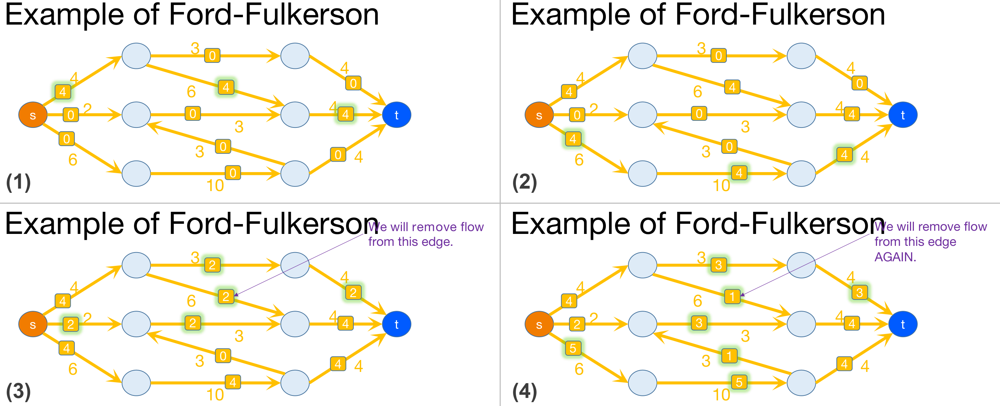
3단계와 4단계가 4.1절의 첫 시도에 없던 움직임입니다. 3단계의 경로를 고르는 슬라이드를 보면, 그 열쇠가 잔여 그래프의 역방향 간선이라는 것이 보입니다.
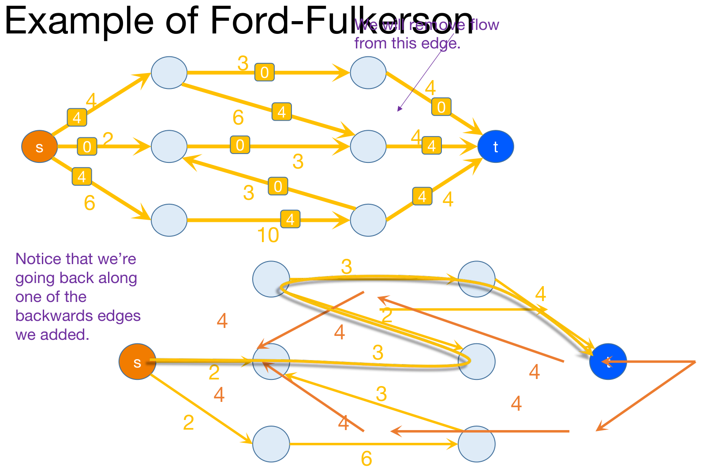
네 번째 증가 뒤에는 더 할 일이 없습니다. 최종 흐름의 잔여 그래프에서 \(s\)로부터 갈 수 있는 곳을 따라가 보겠습니다.
- \(s \to u_1\)과 \(s \to u_2\)는 꽉 찼으므로, \(s\)에서 나가는 잔여 간선은 \(s \to u_3\)(가중치 \(6 - 5 = 1\))뿐입니다.
- \(u_3\)에서 \(u_3 \to v_3\)(가중치 \(10 - 5 = 5\))으로 \(v_3\)에, \(v_3\)에서 \(v_3 \to u_2\)(가중치 \(3 - 1 = 2\))로 \(u_2\)에 갈 수 있습니다.
- 그 밖에 이 네 정점에서 나가는 잔여 간선은 \(u_2 \to u_3\), 그리고 \(s\)나 서로에게로 돌아가는 역방향 간선뿐입니다. \(u_2 \to v_2\)와 \(v_3 \to t\)는 꽉 찼고, \(u_1 \to u_2\)와 \(v_2 \to v_3\)은 흐름이 0이라 역방향 간선이 없습니다.
그래서 \(s\)에서 도달 가능한 정점은 \(\{s, u_2, u_3, v_3\}\)뿐이고 \(t\)에는 닿을 수 없습니다. 이 집합은 2.4절의 최소 컷과 같습니다.
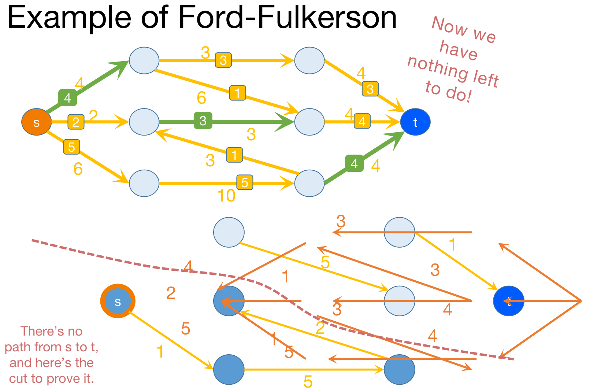
4.8 Ford-Fulkerson은 왜 맞을까요 (Why Does Ford-Fulkerson Work?)
슬라이드는 정당한 의심을 먼저 던집니다. 증가 경로로 더 이상 흐름을 개선할 수 없다고 해서, 더 나은 흐름이 없다는 뜻일까요? 혹시 증가 경로라는 좁은 수단으로는 닿을 수 없는 더 큰 흐름이 따로 있을지도 모릅니다. 다음 보조정리가 그런 일은 없다고 답합니다.
\(G_f\)에 증가 경로가 없으면 \(f\)는 최대 흐름입니다. 더 정확히는, \(G_f\)에서 \(s\)로부터 도달 가능한 정점의 집합을 \(S\), 나머지를 \(T\)라 하면 \((S, T)\)는 s-t 컷이고 다음이 성립합니다.
\[ |f| \;=\; \mathrm{cost}(S, T) \]
슬라이드의 증명은 다음과 같습니다.
- \(G_f\)에 \(s\)에서 \(t\)로 가는 경로가 없다고 합시다.
- 컷을 {\(s\)에서 도달 가능한 것들}, {\(s\)에서 도달할 수 없는 것들}로 잡습니다. 경로가 없으니 \(t\)는 뒤쪽에 삽니다(t lives here). 그래서 이것은 s-t 컷입니다.
- \(s\)에서 \(t\)로 가는 흐름 \(f\)의 값은 이 컷의 비용과 같습니다. 앞의 그림 증명과 비슷합니다.
- 물건은 모두 컷을 건너야 합니다.
- 컷을 건너는 간선은 꽉 차 있습니다. 그런 간선은 \(G_f\)에 없기 때문입니다.
- 그러면 흐름의 값 = 이 컷의 비용 ≥ 최소 컷 ≥ 최대 흐름입니다. 마지막 부등호가 보조정리 1입니다.
- 따라서 \(f\)는 최대 흐름입니다! 곧 Ford-Fulkerson이 멈췄다면 최대 흐름을 찾은 것입니다.
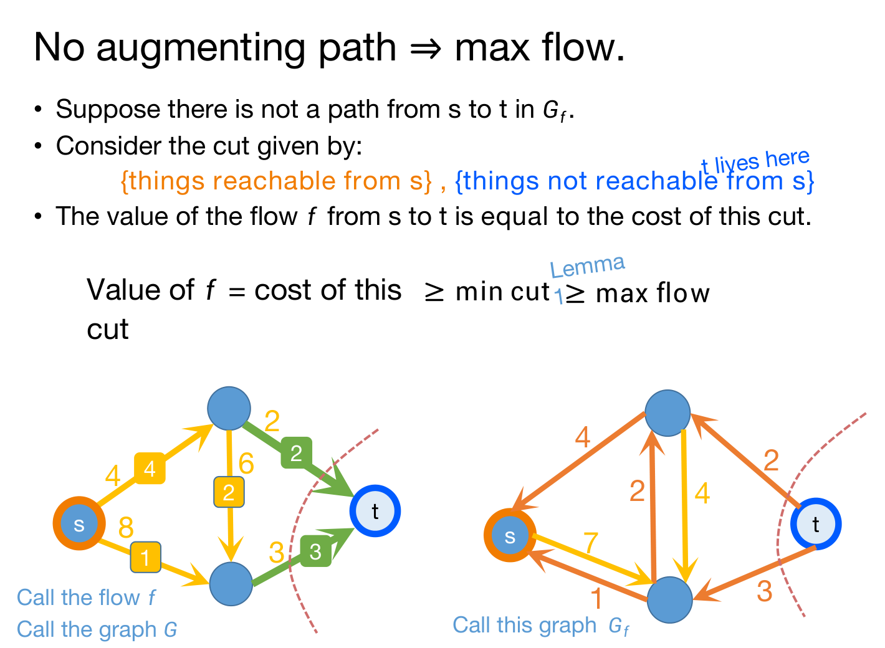
등호 조건으로 증명 다듬기
슬라이드의 두 번째 하위 불릿(“컷을 건너는 간선은 꽉 차 있다”)은 3.6절에서 본 등호 조건의 절반입니다. 나머지 절반까지 채워 증명을 완성해 보겠습니다. 3.6절 2단계에서 보았듯 어떤 컷에서든 다음이 성립합니다.
\[ |f| \;=\; \sum_{\substack{(u,v) \in E \\ u \in S,\; v \in T}} f(u, v) \;-\; \sum_{\substack{(v,u) \in E \\ v \in T,\; u \in S}} f(v, u) \]
이제 \(S\)가 \(s\)에서 도달 가능한 정점의 집합이라는 사실을 두 번 씁니다.
- \(S \to T\) 간선은 꽉 찼습니다. \(u \in S\), \(v \in T\)인 간선 \((u, v)\)에서 \(f(u,v) < c(u,v)\)라면 \(G_f\)에 가중치가 양수인 정방향 간선 \(u \to v\)가 있으므로, \(u\)를 거쳐 \(v\)에도 도달할 수 있습니다. \(v \in T\)라는 데 모순이므로 \(f(u,v) = c(u,v)\)입니다.
- \(T \to S\) 간선은 비어 있습니다. \(v \in T\), \(u \in S\)인 간선 \((v, u)\)에서 \(f(v,u) > 0\)이라면 \(G_f\)에 역방향 간선 \(u \to v\)가 있으므로, 역시 \(v\)에 도달할 수 있어 모순입니다. 따라서 \(f(v,u) = 0\)입니다.
두 사실을 대입하면 첫째 합은 용량의 합, 둘째 합은 0이 됩니다.
\[ |f| \;=\; \sum_{\substack{(u,v) \in E \\ u \in S,\; v \in T}} c(u, v) \;-\; 0 \;=\; \mathrm{cost}(S, T) \]
슬라이드의 그림 증명은 “물건은 모두 컷을 건너야 한다”는 말에 둘째 사실을 담아 두었고, 식으로 쓰면 그것이 따로 필요하다는 것이 드러납니다. 위 예에서는 \(T = \{t\}\)이고 \(t\)에서 나가는 원래 간선이 없으므로 둘째 사실이 저절로 성립합니다. 4.7절의 예제에서는 \(T \to S\) 간선 \(u_1 \to u_2\)와 \(v_2 \to v_3\)의 흐름이 실제로 0이었습니다.
4.9 최대 흐름-최소 컷 정리 (Min-Cut Max-Flow Theorem)
이제 정리를 완성할 수 있습니다. Ford-Fulkerson이 멈춘 뒤의 흐름 \(f\)와, 보조정리 2가 주는 컷 \((S, T)\)를 놓고 부등식을 한 바퀴 돌립니다.
\[ \text{최대 흐름} \;\ge\; |f| \;=\; \mathrm{cost}(S, T) \;\ge\; \text{최소 컷} \;\ge\; \text{최대 흐름} \]
- 첫 번째 \(\ge\): \(f\)도 흐름 가운데 하나이므로, 최대 흐름은 \(|f|\) 이상입니다.
- \(=\): 보조정리 2입니다.
- 두 번째 \(\ge\): \((S, T)\)도 s-t 컷 가운데 하나이므로, 최소 컷은 그 비용 이하입니다.
- 세 번째 \(\ge\): 보조정리 1입니다.
맨 앞과 맨 뒤가 같으므로 사이의 모든 항이 같습니다. 그러니 모두 같고, 최소 컷 = 최대 흐름입니다! 증명 과정에서 Ford-Fulkerson이 돌려준 \(f\)는 최대 흐름이고, 마지막 잔여 그래프에서 도달 가능한 정점들로 만든 \((S, T)\)는 최소 컷이라는 것도 함께 얻습니다.
이 증명에는 알고리즘이 멈춘다는 전제가 숨어 있습니다. 4.14절에서 보듯 용량이 정수이면 반복마다 흐름의 값이 1 이상 늘고, 값은 어떤 컷의 비용도 넘을 수 없으므로(예를 들어 \(\{s\}\)와 나머지로 가른 컷의 비용 \(\sum_{(s,v) \in E} c(s, v)\)) 알고리즘은 반드시 멈춥니다. 용량이 일반 실수이면 멈춘다는 보장이 없으므로(4.12절), 같은 논증을 최대 흐름에 직접 적용합니다. 최대 흐름에 증가 경로가 있다면 increaseFlow로 더 큰 흐름을 만들 수 있으니 모순이고, 따라서 증가 경로가 없어 보조정리 2의 컷을 얻습니다.
4.10 무엇을 배웠나 (What Have We Learned?)
- 최대 s-t 흐름은 최소 s-t 컷과 같습니다!
- 소련과 미국은 같은 문제를 풀려고 했던 셈입니다… 소련이 보낼 수 있는 최대 물자량과 미국이 그 보급로를 끊는 최소 비용은 같은 수입니다.
- Ford-Fulkerson 알고리즘은 최소 컷과 최대 흐름을 찾을 수 있습니다.
- 증가 경로를 따라 흐름을 거듭 개선합니다.
- 멈춘 뒤 잔여 그래프에서 \(s\)로부터 BFS나 DFS를 한 번 더 돌리면 도달 가능한 집합, 곧 최소 컷도 얻습니다.
- 이것은 얼마나 오래 걸릴까요???
4.11 왜 걱정해야 할까요 (Why Should We Be Concerned?)
슬라이드는 증가 경로를 아무렇게나 고르면 어떤 일이 생기는지 작은 예로 보입니다. 아주 큰 수 \(C\)를 하나 고르고, 정점 \(s\), \(a\), \(b\), \(t\)에 다음 간선을 둡니다.
- \(s \to a\), \(s \to b\), \(a \to t\), \(b \to t\)의 용량은 \(C\)입니다.
- 가운데 \(b \to a\)의 용량만 1입니다.
\(s \to a \to t\)로 \(C\), \(s \to b \to t\)로 \(C\)를 보내면 증가 두 번에 값 \(2C\)를 얻고, \(\{s\}\)와 나머지로 가른 컷의 비용도 \(C + C = 2C\)이므로 이것이 최대 흐름입니다. 그런데 매번 가운데 간선을 지나는 경로를 고르면 다음과 같이 됩니다.
| 단계 | 고른 증가 경로 | 병목 | \(s \to a\), \(s \to b\), \(b \to a\), \(a \to t\), \(b \to t\)의 흐름 | 값 | 잔여 그래프의 \((b, a)\) |
|---|---|---|---|---|---|
| 0 | — | — | 0, 0, 0, 0, 0 | 0 | 있음 |
| 1 | \(s \to b \to a \to t\) | 1 | 0, 1, 1, 1, 0 | 1 | 사라짐 |
| 2 | \(s \to a \to b \to t\) (\(a \to b\)는 역방향) | 1 | 1, 1, 0, 1, 1 | 2 | 다시 나타남 |
| 3 | \(s \to b \to a \to t\) | 1 | 1, 2, 1, 2, 1 | 3 | 사라짐 |
| ⋮ | ⋮ | ⋮ | ⋮ | ⋮ | ⋮ |
| \(2C\) | \(s \to a \to b \to t\) | 1 | \(C, C, 0, C, C\) | \(2C\) | 다시 나타남 |
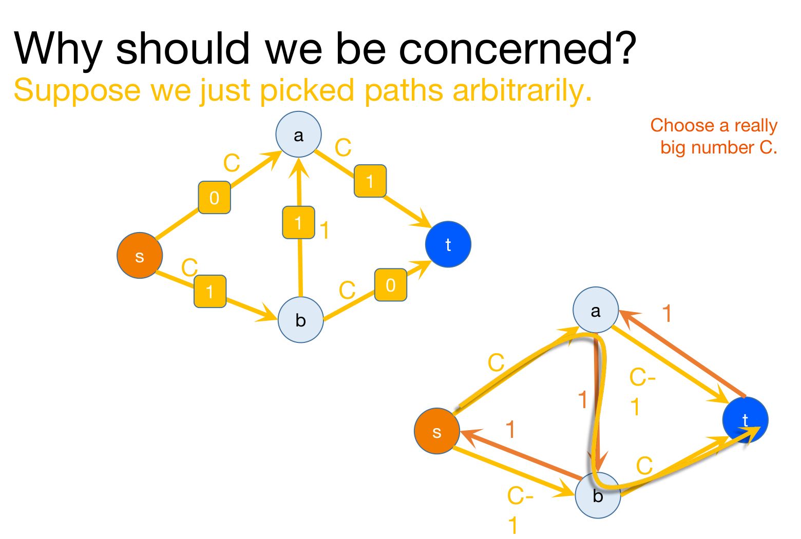
- 1단계 뒤 슬라이드는 간선 \((b, a)\)가 잔여 그래프에서 사라졌다고, 2단계 뒤에는 다시 나타났다고, 3단계 뒤에는 또 사라졌다고 적습니다.
- 홀수 단계는 \((b, a)\)에 흐름 1을 더하고, 짝수 단계는 역방향 간선으로 그 1을 뺍니다. 어느 단계든 병목이 1이라 값은 1씩만 늡니다.
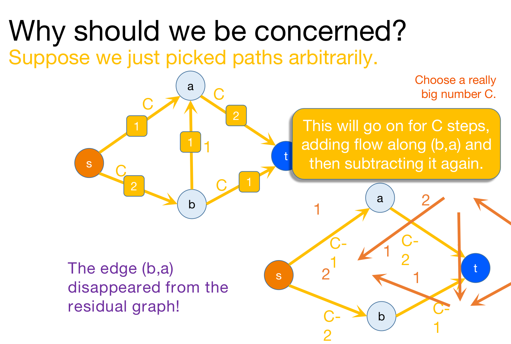
슬라이드의 말풍선은 이 일이 \(C\)단계 동안 이어진다고 말합니다. \((b, a)\)에 흐름을 더했다가 빼는 한 쌍을 한 단계로 센 것이고, 증가 경로를 찾는 횟수로는 \(2C\)번입니다. 최대 흐름 \(2C\)에 매번 1씩 다가가기 때문입니다. 두 번이면 끝날 일을 \(2C\)번 하는 셈입니다.
이것이 왜 심각한지는 13강 배낭 문제에서 본 입력 크기 논의와 같습니다. \(C\)는 \(O(\log C)\)비트로 적히므로, \(C\)에 비례하는 반복 횟수는 입력 크기에 대해 지수적입니다. 일반적으로 용량이 정수일 때 Ford-Fulkerson은 반복마다 값이 1 이상 늘므로 반복 횟수가 최대 흐름의 값 \(|f^*|\) 이하이고, 한 번의 반복에 \(O(m)\)이 들어 \(O(m\,|f^*|)\) 시간이 걸립니다. 이 예는 그 상한에 실제로 닿을 수 있음을 보여 줍니다.
4.12 어떤 경로를 골라야 할까요 (How Do We Choose Which Paths to Use?)
- 지금까지의 분석은 경로를 어떻게 고르든 성립합니다.
- 곧 알고리즘이 멈추기만 하면 답은 옳습니다.
- 하지만 알고리즘이 효율적이지 않을 수 있습니다!!!
- 멈추는 데 오랜 시간이 걸릴 수 있습니다.
- (어쩌면 아예 멈추지 않을까요?) 슬라이드는 물음표로 남겨 두었는데, 용량이 무리수이면 실제로 멈추지 않는 예가 알려져 있습니다. 정수 용량에서는 4.9절의 논증대로 반드시 멈춥니다.
- 알고리즘이 빨리 멈추도록 경로를 신중하게 골라야 합니다.
- BFS를 쓰면 Edmonds-Karp 알고리즘(에드먼즈-카프 알고리즘)이 됩니다.
- 이 알고리즘은 \(O(nm^2)\) 시간에 끝납니다. 증명은 생략합니다.
- (그것이 유일한 방법은 아닙니다!)
BFS는 간선 수가 가장 적은 증가 경로를 고릅니다. 4.11절의 예에서 처음 잔여 그래프의 \(s\)-\(t\) 경로 가운데 \(s \to a \to t\)와 \(s \to b \to t\)는 간선이 둘, \(s \to b \to a \to t\)는 셋이므로, BFS는 짧은 두 경로를 먼저 골라 증가 두 번 만에 끝냅니다.
4.13 수행 시간 (Running Time)
- Edmonds-Karp 알고리즘(BFS를 쓰는 Ford-Fulkerson)은 \(O(nm^2)\) 시간에 돕니다.
- 수업에서는 증명을 생략하고, 기본 아이디어만 짚습니다.
- 잔여 그래프에서 간선 하나가 제거되는 횟수는 \(O(n)\)입니다. — 이것이 어려운 부분입니다.
- 간선은 많아야 \(m\)개입니다.
- 간선을 하나 제거할 때마다 BFS를 한 번 돌리고, BFS는 \(O(n + m)\) 시간이 듭니다.
- 사실은 \(O(m)\)입니다. 그래프 전체를 탐색할 필요 없이 \(s\)에서 도달 가능한 부분만 보면 되기 때문입니다.
이 아이디어들을 곱하면 상한이 나옵니다. 연결 고리는 “증가 한 번마다 적어도 하나의 간선이 잔여 그래프에서 제거된다”는 사실입니다. 병목 \(x\)는 경로 위 가장 작은 가중치이므로, 그 가중치를 가진 간선은 증가 뒤 가중치가 0이 되어 잔여 그래프에서 빠집니다. 정방향 간선이면 꽉 찼고, 역방향 간선이면 흐름이 0이 된 것입니다. 따라서 증가 횟수는 간선 제거 횟수의 총합을 넘지 않습니다.
\[ \underbrace{O(n)}_{\text{간선 하나가 제거되는 횟수}} \times \underbrace{O(m)}_{\text{간선의 수}} \times \underbrace{O(m)}_{\text{BFS 한 번}} \;=\; O(nm^2) \]
- 잔여 그래프에는 정방향과 역방향을 합쳐 간선이 많아야 \(2m\)개이지만, 이것도 \(O(m)\)입니다.
- BFS가 \(O(m)\)인 이유는 \(s\)에서 도달 가능한 정점이 \(s\)를 빼면 모두 어떤 간선을 타고 처음 도착한 정점이라, 그 수가 간선 수 이하이기 때문입니다.
- 이 상한에는 용량 \(C\)가 나타나지 않습니다. 4.11절의 예처럼 용량이 아무리 커도 반복 횟수는 그래프의 크기로만 묶입니다. BFS가 고르는 최단 경로 덕분에 각 간선이 \(O(n)\)번만 제거된다는 것이 생략된 증명의 핵심입니다.
4.14 쓸모 있는 관찰 하나 더 (One More Useful Observation)
- 용량이 모두 정수이면, 최대 흐름의 흐름도 모두 정수입니다.
- Ford-Fulkerson에서 흐름을 갱신할 때는 정수를 더하거나 빼기만 합니다.
- 0(정수)에서 시작했으므로, 모든 값이 정수로 남습니다.
귀납법으로 쓰면 한 줄입니다. 흐름이 정수이면 잔여 가중치 \(c - f\)와 \(f\)가 정수이고, 그 최솟값인 병목 \(x\)도 정수이며, \(f \pm x\)도 정수입니다. 처음 흐름 0이 정수이므로 모든 반복에서 흐름은 정수입니다. 덤으로 병목이 양의 정수, 곧 1 이상이므로 반복마다 값이 1 이상 늘어 4.9절에서 쓴 종료 보장도 여기서 나옵니다.
슬라이드의 문장은 “어떤(any) 최대 흐름의 흐름도 모두 정수”라고 읽히지만, 근거로 든 논증이 보이는 것은 Ford-Fulkerson이 돌려준 최대 흐름이 정수라는 것, 곧 정수인 최대 흐름이 존재한다는 것입니다. 정수가 아닌 최대 흐름이 함께 있을 수 있습니다.
- 예: \(s \to a\)(용량 1) 뒤에 \(a \to b \to t\)와 \(a \to c \to t\)(모두 용량 1)가 갈라지면 최대 흐름의 값은 1인데, 두 갈래에 0.5씩 나눠 보낸 흐름도 값이 1인 최대 흐름입니다.
5장의 응용이 쓰는 것은 앞의 형태입니다. 정수 용량 네트워크에서 Ford-Fulkerson으로 구한 최대 흐름은 정수라서, 흐름을 매칭이나 배정으로 그대로 읽을 수 있습니다.
5. 응용 (Applications)
5.1 끝이 아닙니다 (But Wait, There’s More!)
- 최소 컷과 최대 흐름은 1955년의 미국과 소련에게만 쓸모 있었던 것이 아닙니다.
- Ford-Fulkerson 알고리즘은 다른 많은 그래프 알고리즘의 기반입니다.
- 오늘 남은 시간에는 그 가운데 몇 가지를 봅니다.
- 이분 그래프의 최대 매칭(maximum bipartite matching)
- 정수 배정 문제(integer assignment problems)
5.2 이분 그래프의 최대 매칭 (Maximum Matching in Bipartite Graphs)
- 학생마다 원하는 Stanford 기념품(swag)이 다릅니다(몸에 맞는지, 스타일 등에 따라).
- 가능한 한 많은 학생을 행복하게 하려면 어떻게 해야 할까요?
학생 한 명은 기념품 하나만 받고, 기념품 하나는 한 학생에게만 갈 수 있습니다. 학생과 기념품을 정점으로, “이 학생이 이 기념품을 원한다”를 간선으로 놓으면 간선은 늘 학생 쪽과 기념품 쪽을 잇습니다. 이런 그래프가 이분 그래프(bipartite graph)이고, 끝점을 공유하지 않는 간선들의 집합을 매칭(matching), 그 가운데 간선이 가장 많은 것을 최대 매칭(maximum matching)이라 합니다. 질문은 최대 매칭을 찾는 것입니다.
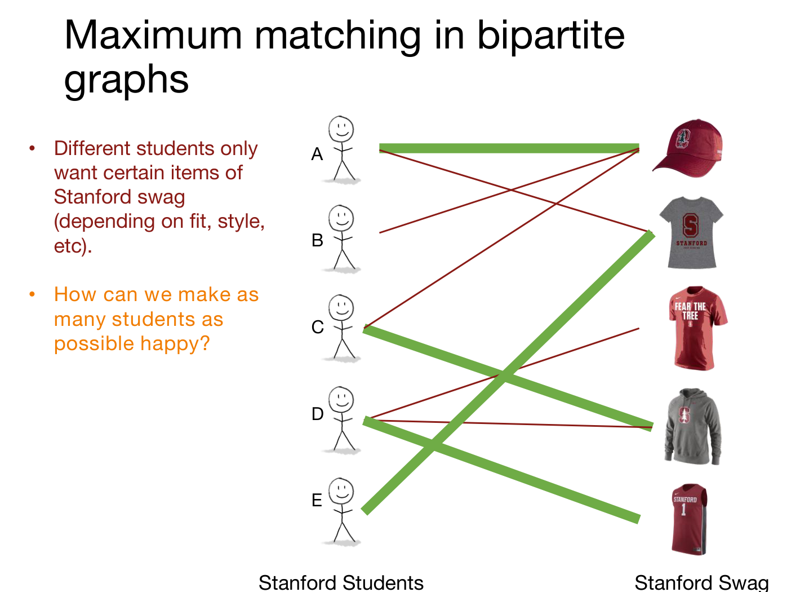
초록 매칭의 크기 4가 정말 최대인지는 쉽게 확인할 수 있습니다. A, B, E 세 학생이 원하는 기념품을 모으면 모자와 회색 티셔츠 두 개뿐이므로, 이 셋 가운데 많아야 두 명만 기념품을 받습니다. 그러니 다섯 명 모두를 만족시킬 수는 없고, 4가 최대입니다.
5.3 최대 흐름으로 풀기 (Solution via Max Flow)
매칭 문제를 흐름 네트워크로 바꿉니다.
- 소스 \(s\)에서 학생마다 간선을 하나씩 냅니다.
- 학생이 원하는 기념품마다 학생에서 기념품으로 간선을 냅니다.
- 기념품마다 싱크 \(t\)로 간선을 냅니다.
- 모든 간선의 용량은 1입니다.
그리고 이 네트워크의 최대 흐름을 Ford-Fulkerson으로 구합니다. 슬라이드 71은 그 결과로 \(s\)에서 A, C, D, E로, 다시 각자의 기념품으로, 기념품에서 \(t\)로 흐름 1이 지나가는 값 4의 흐름을 보여 주고, 다음 슬라이드가 왜 이것이 답인지 다섯 단계로 설명합니다.
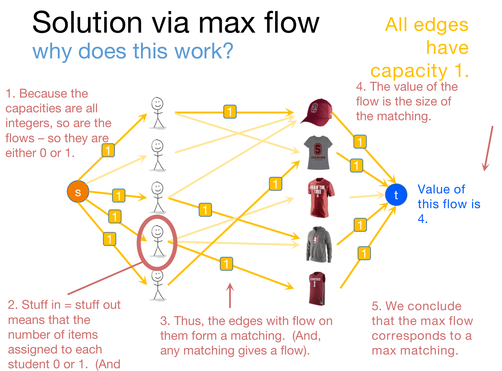
다섯 단계를 조금 더 풀어 보겠습니다.
- 용량이 모두 정수이므로 흐름도 정수입니다. 4.14절의 관찰대로 Ford-Fulkerson이 돌려준 흐름은 정수이고, 용량이 1이니 간선마다 0 아니면 1입니다.
- 들어온 만큼 나가므로 각 학생에게 배정되는 기념품은 0개 아니면 1개입니다. 학생으로 들어오는 간선은 \(s\)에서 오는 용량 1짜리 하나뿐이라, 학생에서 나가는 흐름도 1 이하입니다. 슬라이드에서 잘린 괄호 안은 같은 논리를 기념품 쪽에 적용한 문장으로 보입니다. 기념품에서 나가는 간선은 \(t\)로 가는 용량 1짜리 하나뿐이므로, 각 기념품도 많아야 한 학생에게 갑니다.
- 그러므로 흐름이 실린 학생-기념품 간선들은 매칭을 이룹니다. 거꾸로 어떤 매칭이든 흐름을 줍니다. 매칭의 간선마다 \(s \to\) 학생 \(\to\) 기념품 \(\to t\)로 1씩 보내면 용량 제약과 흐름 보존이 지켜집니다.
- 흐름의 값이 매칭의 크기입니다. \(s\)에서 나가는 흐름 1마다 매칭 간선이 하나씩 대응합니다.
- 결론: 최대 흐름이 최대 매칭에 대응합니다. 3번이 흐름과 매칭 사이를 값을 보존하며 양방향으로 오가게 해 주므로, 어느 한쪽의 최댓값이 다른 쪽의 최댓값입니다.
이분 그래프의 왼쪽 정점 \(X\)와 오른쪽 정점 \(Y\)에 대해, \(s \to x\) (\(x \in X\)), \(x \to y\) (원하는 쌍마다), \(y \to t\) (\(y \in Y\))를 모두 용량 1로 둔 네트워크에서 Ford-Fulkerson이 찾은 최대 흐름의 흐름 1짜리 \(x \to y\) 간선들이 최대 매칭이고, 그 크기는 최대 흐름의 값과 같습니다. 예제에서는 둘 다 4입니다.
5.4 배정 문제 (A Slightly More Complicated Example: Assignment Problems)
조금 더 복잡한 예로, 짝마다 “한 번”이 아니라 “여러 번”이 허용되는 배정 문제(assignment problem)를 봅니다. 슬라이드는 일반형과 예를 나란히 적습니다.
- 집합 \(X\)가 하나 있습니다. — 예: 서울대학교(SNU) 학생들
- 또 다른 집합 \(Y\)가 있습니다. — 예: 아이스크림 통들
- \(X\)의 원소 \(x\)는 \(c(x)\)번까지 짝지어질 수 있습니다. — 예: 학생 \(x\)는 아이스크림을 4스쿱까지만 먹을 수 있습니다.
- \(Y\)의 원소 \(y\)는 \(c(y)\)번까지만 짝지어질 수 있습니다. — 예: 아이스크림 통 \(y\)에는 10스쿱만 들어 있습니다.
- 쌍 \((x, y)\)는 \(c(x, y)\)번까지만 짝지어질 수 있습니다. — 예: 학생 \(x\)는 맛 \(y\)를 3스쿱만 원하고, 학생 \(x'\)은 맛 \(y'\)을 한 스쿱도 원하지 않습니다(\(c(x', y') = 0\)).
- 목표: 가능한 한 많은 짝을 배정합니다.
5.2절의 매칭은 모든 학생과 기념품에서 \(c(x) = c(y) = 1\)이고, 원하는 쌍은 \(c(x, y) = 1\), 원하지 않는 쌍은 \(c(x, y) = 0\)인 특수한 경우입니다. 네트워크도 같은 방식으로 만들고 용량만 바꿉니다. \(s \to x\)의 용량은 \(c(x)\), \(x \to y\)의 용량은 \(c(x, y)\)(\(c(x, y) = 0\)이면 간선을 두지 않음), \(y \to t\)의 용량은 \(c(y)\)입니다. 그러면 정수 흐름에서 \(x \to y\)의 흐름이 “\(x\)에게 \(y\)를 몇 번 배정하는가”가 되고, 세 제약이 각각 \(s \to x\), \(x \to y\), \(y \to t\)의 용량 제약과 흐름 보존으로 지켜집니다.
5.5 예제 (Example)
아이스크림을 가능한 한 많이 나눠 주려면 어떻게 해야 할까요?
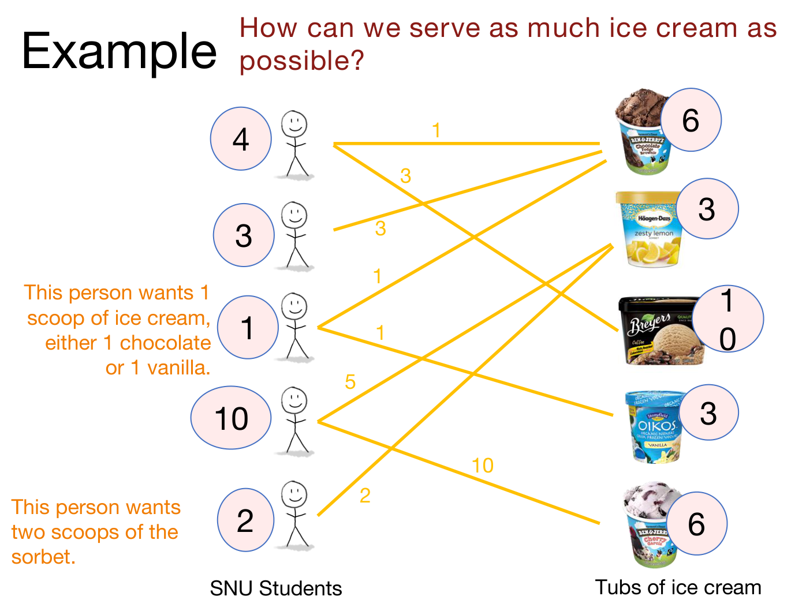
표로 정리하면 다음과 같습니다. 학생 번호는 이 포스트에서 위에서부터 붙였습니다.
| 학생 | \(c(x)\) | 원하는 맛과 한도 \(c(x, y)\) |
|---|---|---|
| 학생 1 | 4 | 초콜릿 1, 커피 3 |
| 학생 2 | 3 | 초콜릿 3 |
| 학생 3 | 1 | 초콜릿 1, 바닐라 1 |
| 학생 4 | 10 | 레몬 소르베 5, 체리 가르시아 10 |
| 학생 5 | 2 | 레몬 소르베 2 |
통의 스쿱 수 \(c(y)\)는 초콜릿 6, 레몬 소르베 3, 커피 10, 바닐라 3, 체리 가르시아 6입니다. 5.4절의 일반형에 쓰인 예(4스쿱까지만 먹는 학생, 10스쿱 든 통, 그 맛을 3스쿱만 원하는 학생)는 이 예제의 학생 1과 커피 통에 그대로 들어맞습니다.
슬라이드 75는 5.4절의 방법대로 네트워크를 그립니다. \(s\)에서 학생으로 4, 3, 1, 10, 2, 학생에서 통으로 위 표의 한도, 통에서 \(t\)로 6, 3, 10, 3, 6의 용량을 둡니다. 다음 두 슬라이드가 그 최대 흐름입니다.
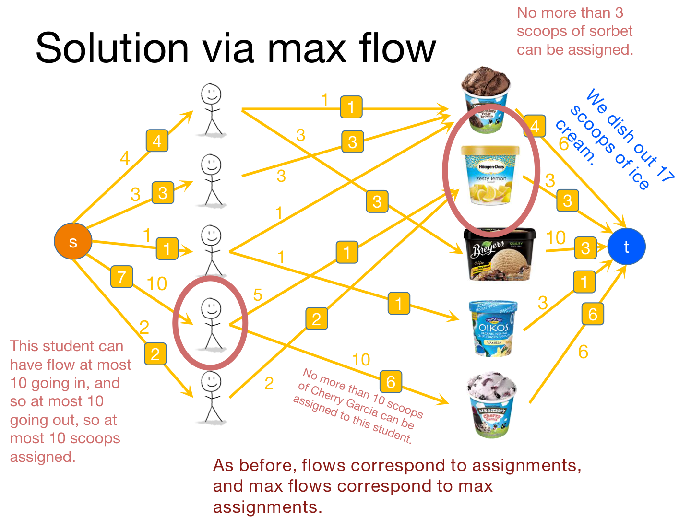
최대 흐름이 주는 배정은 다음과 같습니다.
| 학생 | 받는 아이스크림 | 합계 / \(c(x)\) |
|---|---|---|
| 학생 1 | 초콜릿 1, 커피 3 | 4 / 4 |
| 학생 2 | 초콜릿 3 | 3 / 3 |
| 학생 3 | 바닐라 1 | 1 / 1 |
| 학생 4 | 레몬 소르베 1, 체리 가르시아 6 | 7 / 10 |
| 학생 5 | 레몬 소르베 2 | 2 / 2 |
| 합계 | 17 |
- 통 쪽에서 보면 초콜릿 \(1 + 3 = 4\) / 6, 레몬 소르베 \(1 + 2 = 3\) / 3, 커피 3 / 10, 바닐라 1 / 3, 체리 가르시아 6 / 6이고, 모두 더하면 역시 17입니다.
- 학생 3은 초콜릿 대신 바닐라를 받았지만, 초콜릿 통에도 2스쿱이 남아 있으므로 초콜릿 1을 줘도 똑같이 최적입니다. 최대 흐름이 여럿일 수 있다는 뜻입니다.
슬라이드는 17이 최대라는 것을 따로 보이지 않지만, 최대 흐름-최소 컷 정리로 곧바로 확인할 수 있습니다. \(S = \{s, \text{학생 4}, \text{학생 5}, \text{레몬 소르베}, \text{체리 가르시아}\}\)로 잡으면 이 컷을 건너는 간선은 다음 다섯 개뿐입니다.
\[ \underbrace{4 + 3 + 1}_{s \,\to\, \text{학생 1, 2, 3}} \;+\; \underbrace{3 + 6}_{\text{레몬 소르베, 체리 가르시아} \,\to\, t} \;=\; 17 \]
비용 17인 컷이 있으므로 보조정리 1에 따라 어떤 배정도 17을 넘을 수 없습니다. 말로 풀면, 학생 1–3은 원하는 만큼(4 + 3 + 1 = 8스쿱) 모두 받았고, 학생 4와 5가 원하는 맛은 레몬 소르베와 체리 가르시아뿐인데 두 통을 합해 3 + 6 = 9스쿱밖에 없습니다. 8 + 9 = 17입니다.
5.6 무엇을 배웠나 (What Have We Learned?)
- 최대 흐름과 최소 컷은 철도 수송만을 위한 것이 아닙니다.
- 당장 다른 종류의 경로 배정(routing)에도 그대로 쓰입니다!
- 그뿐 아니라 Stanford 학생들에게 물건을 배정하는 데도 쓸모가 있습니다!
5.7 더 잘할 수 있을까요 (Can We Do Better? State-of-the-Art Max Flow)
마지막으로 슬라이드는 최대 흐름 알고리즘의 최신 결과를 보여 줍니다. Li Chen(Georgia Tech), Rasmus Kyng(ETH Zurich), Yang P. Liu(Stanford University), Richard Peng(University of Waterloo), Maximilian Probst Gutenberg(ETH Zurich), Sushant Sachdeva(University of Toronto)의 논문 Maximum Flow and Minimum-Cost Flow in Almost-Linear Time(예비판, 2022년 3월 2일자 arXiv 원고)의 첫 쪽입니다. 초록의 내용은 다음과 같습니다.
- 간선이 \(m\)개인 유향 그래프에서, 수요·비용·용량이 다항식으로 유계인 정수일 때 정확한 최대 흐름과 최소 비용 흐름을 \(m^{1+o(1)}\) 시간에 구합니다.
- 흐름을 \(m^{1+o(1)}\)개의 근사 무향 최소 비율 순환(minimum-ratio cycle)을 차례로 더해 쌓아 올리고, 각 순환은 동적 자료구조를 써서 분할 상환(amortized) \(m^{o(1)}\) 시간에 계산·처리합니다.
\(m^{1+o(1)}\)은 간선 수에 거의 비례하는, 이른바 거의 선형(almost-linear) 시간입니다. 4.13절의 Edmonds-Karp가 \(O(nm^2)\)였던 것과 비교하면, 1955년에 시작된 이 문제가 입력을 한 번 읽는 데 드는 시간에 가까운 속도로 풀리게 되었다는 뜻입니다.
6. 되짚어보기 (Recap)
- 오늘은 s-t 컷과 s-t 흐름을 이야기했습니다.
- 최소 컷 최대 흐름 정리(Min-Cut Max-Flow Theorem)는 컷의 비용을 최소화하는 것이 흐름의 값을 최대화하는 것과 같다고 말합니다.
- Ford-Fulkerson 알고리즘이 이 일을 합니다!
- 증가 경로를 찾습니다.
- 그 경로를 따라 흐름을 늘립니다.
- 더 이상 경로를 찾을 수 없을 때까지 되풀이하면 끝입니다!
- 중요한 알고리즘의 기본 도구(primitive)입니다!
- 예: 배정 문제.
강의 전체를 관통하는 구조는 “서로를 가두는 두 문제”입니다. 흐름은 아래에서, 컷은 위에서 같은 값을 향해 다가가며(보조정리 1), Ford-Fulkerson은 흐름을 키우다 멈추는 순간 그 흐름과 값이 같은 컷을 함께 내놓아(보조정리 2) 두 문제를 동시에 끝냅니다.
6.1 다음 시간 (Next Time)
- 안정 매칭(stable matchings)!
- 지연 수락(deferred acceptance) 알고리즘, 곧 Gale-Shapley 알고리즘
슬라이드는 미국 레지던트 매칭 프로그램(NRMP) 소개 페이지의 그림을 곁들입니다. ’Register. Rank. Results.’라는 세 단계 문구 옆에 의사들과 병원들의 사진이 선으로 이어져 있습니다. 오늘의 매칭이 “몇 쌍을 맺을 수 있나”를 물었다면, 다음 시간에는 양쪽 모두에게 선호가 있을 때 “어떤 짝이 안정적인가”를 묻습니다.
정리하며 (Closing Remarks)
이번 강의의 논리 사슬을 단계별로 압축하면 다음과 같습니다.
| 단계 | 내용 | 근거 |
|---|---|---|
| ① 컷과 비용 | s-t 컷은 \(s\)와 \(t\)를 가르는 정점 분할이고, 비용은 \(s\) 쪽에서 \(t\) 쪽으로 건너는 간선의 용량 합이다. 반대 방향 간선은 세지 않는다 | 슬라이드 5–8, \(\{s, u_3\}\)의 비용 16 |
| ② 최소 컷 | 예제의 최소 s-t 컷은 \(\{s, u_2, u_3, v_3\}\)로 비용 11이다. 컷은 지수적으로 많아 모두 뒤질 수 없으므로 찾는 방법이 필요하다 | 슬라이드 9, 64가지 전수 확인 |
| ③ 흐름 | 흐름은 용량을 넘지 않고 \(s\), \(t\) 밖의 정점에서 보존된다. 그래서 \(s\)에서 나간 양과 \(t\)로 들어간 양이 같고, 이것이 흐름의 값이다 | 슬라이드 11–12 |
| ④ 최대 흐름 | 예제의 최대 흐름은 11로 최소 컷의 비용과 같고, 최소 컷을 건너는 간선이 모두 꽉 찬다 | 슬라이드 14, 19–20 |
| ⑤ 보조정리 1 | 흐름의 값은 어느 컷에서 재든 컷을 가로지르는 순흐름과 같으므로, 컷의 비용을 넘을 수 없다. 곧 최대 흐름 ≤ 최소 컷 | 그림 증명과 그것을 식으로 옮긴 증명 |
| ⑥ 잔여 네트워크 | 정방향 간선은 남은 양 \(c - f\)를, 역방향 간선은 되돌릴 수 있는 양 \(f\)를 담는다. 그 안의 \(s \to t\) 경로가 증가 경로다 | 슬라이드 27–29 |
| ⑦ increaseFlow | 병목 \(x\)만큼 정방향 간선은 더하고 역방향 간선은 빼면, 용량 제약과 흐름 보존이 지켜진 채 값이 \(x\)만큼 는다 | 쉬운 경우와 어려운 경우, 네 경우 표 |
| ⑧ Ford-Fulkerson | 흐름 0에서 시작해 증가 경로가 없을 때까지 increaseFlow를 되풀이한다. 예제는 4 + 4 + 2 + 1 = 11이며, 뒤의 두 번은 역방향 간선 없이는 불가능했다 | 슬라이드 37–48 |
| ⑨ 보조정리 2와 정리 | 증가 경로가 없으면 \(s\)에서 도달 가능한 집합의 컷에서 \(S \to T\) 간선은 꽉 차고 \(T \to S\) 간선은 비어 있어 흐름의 값이 컷의 비용과 같다. 보조정리 1과 합쳐 최대 흐름 = 최소 컷 | 슬라이드 49–54 |
| ⑩ 경로 선택과 시간 | 경로를 아무렇게나 고르면 용량 \(C\)에 비례해 \(2C\)번이 걸릴 수 있다. BFS로 고르는 Edmonds-Karp는 \(O(nm^2)\)이다 | 슬라이드 56–65 |
| ⑪ 정수성 | 용량이 정수이면 모든 갱신이 정수의 덧셈과 뺄셈이므로 Ford-Fulkerson은 정수인 최대 흐름을 돌려준다 | 슬라이드 66 |
| ⑫ 매칭과 배정 | 용량을 1(매칭) 또는 \(c(x)\), \(c(x, y)\), \(c(y)\)(배정)로 둔 네트워크의 정수 최대 흐름이 최대 매칭과 최대 배정이다. 예제의 답은 4와 17 | 슬라이드 68–77 |
| ⑬ 더 빠른 알고리즘 | 정수 용량이 다항식으로 유계이면 최대 흐름을 거의 선형 시간 \(m^{1+o(1)}\)에 구할 수 있다 | Chen et al. (2022) |